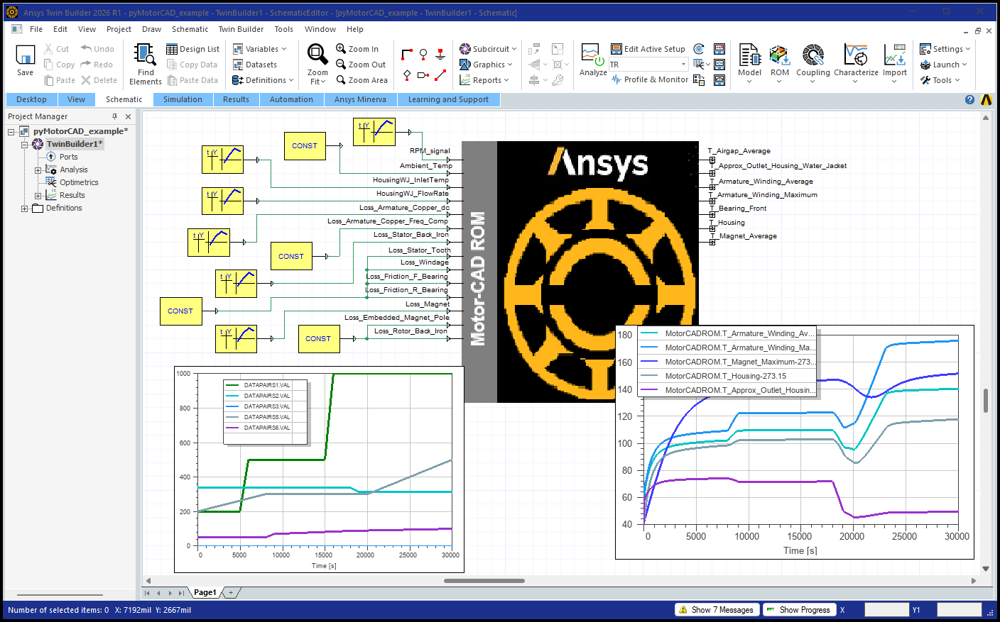
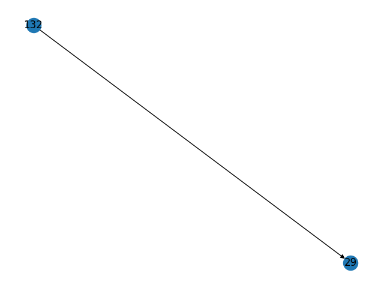
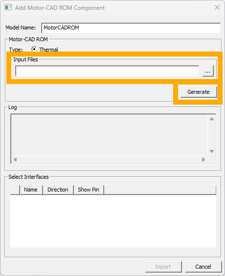
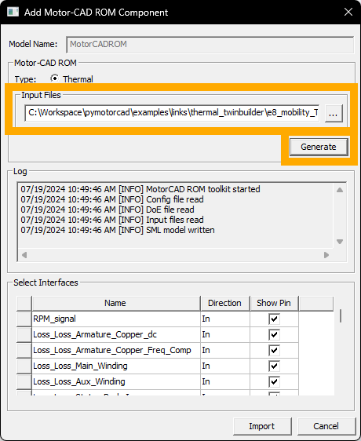

Note
Go to the end to download the full example code.
Motor-CAD Thermal Twin Builder ROM#
This example shows how to transform a Motor-CAD model into a Thermal ROM (reduced order model) in Ansys Twin Builder.
Important
We strongly recommend using Ansys Twin Builder 2026 R1 or newer, as it includes significant new Thermal ROM capabilities.
Background#
Several options exist to transform a Motor-CAD Thermal Model into a Thermal ROM. The most comprehensive and recommended option is to use this workflow to create a Thermal ROM in Ansys Twin Builder. The process has two steps:
Run this python script, which will run Motor-CAD to generate training data for the Thermal ROM.
You will need to set appropriate values in the script, such as the .mot file location, speeds and flow rates of interest.
In Twin Builder, select this training data within the Motor-CAD ROM wizard.
This will generate the Thermal ROM.
The following screenshot shows a resulting Thermal ROM in Twin Builder. The input and output pins were automatically created. Values to feed into the input pins (yellow boxes) and plots of the time-varying values of the input and output pins (two bottom graphs) were manually added.

The Thermal ROM has been designed to require minimal setup expertise, have a quick setup time and maintain high solve accuracy when compared to the full fidelity Motor-CAD thermal model. During runtime, the Thermal ROM will automatically interpolate between the operating points used to generate the training data, ensuring validity over the full user defined operating range.
User friendly input and output pins ensure ease of use, even for those unfamiliar with Motor-CAD. The pins have been designed to allow easy linking between the Thermal ROM and the Motor-CAD Lab FMU, allowing for fast, coupled, drive cycle simulations.
The Thermal ROM is also standalone (does not require Motor-CAD at runtime), thus allowing it to be distributed and used in alternate systems whilst obscuring the underlying Motor-CAD geometry.
Key features include:
Ability to handle models with any cooling system, including coupled cooling systems
Inclusion of variable speed
Inclusion of variable coolant flow rate and inlet temperature
Inclusion of natural convection and radiation
Inclusion of variable ambient temperature
Inclusion of temperature dependent airgap heat transfer
Automatic input pin creation for any parameter dependent behaviour (e.g. speed, flow rate)
Automatic input pin creation for each applicable loss type (including any defined custom losses)
Automatic input pin creation for any fixed temperature nodes
Automatic output pin creation for post-processed temperatures for solids (e.g. Armature Winding Average Temperature) and coolant flows (e.g. Housing Water Jacket Outlet Temperature)
Ability to set arbitrary initial temperatures, per component
Ability to export the Thermal ROM as an FMU, which can be deployed within any FMU compatible tool
Please see Example use case to see an example of ROM generation.
Workflow python script#
from __future__ import annotations
import csv
from dataclasses import astuple, dataclass
import itertools
import logging
from numbers import Number
import os
from pathlib import Path
from typing import Dict, List, Optional
import matplotlib.pyplot as plt
import networkx as nx
import numpy as np
import ansys.motorcad.core as pymotorcad
logger = logging.getLogger(__name__)
The AutomationParam class is used to create parameters that can be included in
coolingSystemsParameterSweeps. The most commonly used parameters, including flow rates and
inlet temperatures for each cooling system, have already been defined. Additional parameters can
be defined by the user, and there is no limit to which Motor-CAD parameters can be chosen. Refer
to the coolingSystemsParameterSweeps parameter in the Example use case to see an
example of how the AutomationParam parameters are used.
@dataclass(eq=True, frozen=True)
class AutomationParam:
name: str
automationString: str
isTemperature: bool = False
@property
def tbOffset(self):
if self.isTemperature:
return 273.15
else:
return 0.0
def __iter__(self):
return iter(astuple(self))
@dataclass(eq=True, frozen=True)
class FixedNodeTempParam:
name: str
nodeNumber: int
tbOffset: float = 273.15
def __iter__(self):
return iter(astuple(self))
@dataclass(eq=True, frozen=True)
class CoolingSystem:
name: str
groupName: str | None
# All automation parameters used for the cooling systems are defined here
RPM = AutomationParam("rpm", "ShaftSpeed")
Ventilated_FlowRate = AutomationParam("Ventilated_FlowRate", "TVent_Flow_Rate")
Ventilated_InletTemp = AutomationParam("Ventilated_InletTemp", "TVent_Inlet_Temperature", True)
HousingWJ_FlowRate = AutomationParam("HousingWJ_FlowRate", "WJ_Fluid_Volume_Flow_Rate")
HousingWJ_InletTemp = AutomationParam("HousingWJ_InletTemp", "HousingWJ_Inlet_Temperature", True)
ShaftSG_FlowRate = AutomationParam("ShaftSG_FlowRate", "Shaft_Groove_Fluid_Volume_Flow_Rate")
ShaftSG_InletTemp = AutomationParam(
"ShaftSG_InletTemp", "Shaft_Groove_Fluid_Inlet_Temperature", True
)
WetRotor_FlowRate = AutomationParam("WetRotor_FlowRate", "Wet_Rotor_Fluid_Volume_Flow_Rate")
WetRotor_InletTemp = AutomationParam("WetRotor_InletTemp", "Wet_Rotor_Inlet_Temp", True)
Spray_FlowRate = AutomationParam("Spray_FlowRate", "Spray_Cooling_Fluid_Volume_Flow_Rate")
Spray_InletTemp = AutomationParam("Spray_InletTemp", "Spray_Cooling_Inlet_Temp", True)
SprayRadialHousing_FlowRate = AutomationParam(
"SprayRadialHousing_FlowRate", "Spray_RadialHousing_VolumeFlowRate"
)
SprayRadialHousing_FrontFlowProportion = AutomationParam(
"SprayRadialHousing_FrontFlowProportion", "Spray_RadialHousing_FlowProportion_F"
)
SprayRadialHousingF_InletTemp = AutomationParam(
"SprayRadialHousingF_InletTemp", "Spray_RadialHousing_InletTemperature_F", True
)
SprayRadialHousingR_InletTemp = AutomationParam(
"SprayRadialHousingR_InletTemp", "Spray_RadialHousing_InletTemperature_R", True
)
SprayRadialRotor_FlowRate = AutomationParam(
"SprayRadialRotor_FlowRate", "Spray_RadialRotor_VolumeFlowRate"
)
SprayRadialRotor_FrontFlowProportion = AutomationParam(
"SprayRadialRotor_FrontFlowProportion", "Spray_RadialRotor_FlowProportion_F"
)
SprayRadialRotorF_InletTemp = AutomationParam(
"SprayRadialRotorF_InletTemp", "Spray_RadialRotor_InletTemperature_F", True
)
SprayRadialRotorR_InletTemp = AutomationParam(
"SprayRadialRotorR_InletTemp", "Spray_RadialRotor_InletTemperature_R", True
)
SprayAxialEndcap_FlowRate = AutomationParam(
"SprayAxialEndcap_FlowRate", "Spray_AxialEndcap_VolumeFlowRate"
)
SprayAxialEndcap_FrontFlowProportion = AutomationParam(
"SprayAxialEndcap_FrontFlowProportion", "Spray_AxialEndcap_FlowProportion_F"
)
SprayAxialEndcapF_InletTemp = AutomationParam(
"SprayAxialEndcapF_InletTemp", "Spray_AxialEndcap_InletTemperature_F", True
)
SprayAxialEndcapR_InletTemp = AutomationParam(
"SprayAxialEndcapR_InletTemp", "Spray_AxialEndcap_InletTemperature_R", True
)
RotorWJ_FlowRate = AutomationParam("RotorWJ_FlowRate", "Rotor_WJ_Fluid_Volume_Flow_Rate")
RotorWJ_InletTemp = AutomationParam("RotorWJ_InletTemp", "RotorWJ_Inlet_Temp", True)
SlotWJ_FlowRate = AutomationParam("SlotWJ_FlowRate", "Slot_WJ_Fluid_Volume_Flow_Rate")
SlotWJ_InletTemp = AutomationParam("SlotWJ_InletTemp", "Slot_WJ_Fluid_inlet_temperature", True)
BlownOver_FlowRate = AutomationParam("BlownOver_FlowRate", "Forced_Conv_Default_Flow_Rate")
BlownOver_Velocity = AutomationParam("BlownOver_Velocity", "Forced_Conv_Default_Velocity")
The CoolingSystem class is used to define the cooling systems that can be included in
coolingSystemsParameterSweeps. These are all defined below, and additional custom cooling
systems cannot be defined. Refer to the coolingSystemsParameterSweeps parameter in the
Example use case to see an example of how the CoolingSystem parameters are used.
# All automation parameters used for the cooling systems are defined here
Ventilated = CoolingSystem("Ventilated", "Ventilated")
Housing_Water_Jacket = CoolingSystem("Housing_Water_Jacket", "Housing Water Jacket")
Shaft_Spiral_Groove = CoolingSystem("Shaft_Spiral_Groove", "Shaft Spiral Groove")
Wet_Rotor = CoolingSystem("Wet_Rotor", "Wet Rotor")
Spray_Cooling = CoolingSystem("Spray_Cooling", "Spray Cooling")
Spray_Cooling_Radial_Housing_Front = CoolingSystem(
"Spray_Cooling_Radial_Housing_Front", "Spray Cooling"
)
Spray_Cooling_Radial_Housing_Rear = CoolingSystem(
"Spray_Cooling_Radial_Housing_Rear", "Spray Cooling"
)
Spray_Cooling_Radial_Rotor_Front = CoolingSystem(
"Spray_Cooling_Radial_Rotor_Front", "Spray Cooling"
)
Spray_Cooling_Radial_Rotor_Rear = CoolingSystem("Spray_Cooling_Radial_Rotor_Rear", "Spray Cooling")
Spray_Cooling_Axial_Endcap_Front = CoolingSystem(
"Spray_Cooling_Axial_Endcap_Front", "Spray Cooling"
)
Spray_Cooling_Axial_Endcap_Rear = CoolingSystem("Spray_Cooling_Axial_Endcap_Rear", "Spray Cooling")
Rotor_Water_Jacket = CoolingSystem("Rotor_Water_Jacket", "Rotor Water Jacket")
Slot_Water_Jacket = CoolingSystem("Slot_Water_Jacket", "Slot Water Jacket")
Blown_Over = CoolingSystem("Blown_Over", None)
coolingSystemNames = [
Ventilated,
Housing_Water_Jacket,
Shaft_Spiral_Groove,
Wet_Rotor,
Spray_Cooling,
Spray_Cooling_Radial_Housing_Front,
Spray_Cooling_Radial_Housing_Rear,
Spray_Cooling_Radial_Rotor_Front,
Spray_Cooling_Radial_Rotor_Rear,
Spray_Cooling_Axial_Endcap_Front,
Spray_Cooling_Axial_Endcap_Rear,
Rotor_Water_Jacket,
Slot_Water_Jacket,
Blown_Over,
]
# types
coolingSystemSweepType = Optional[
Dict[CoolingSystem, Dict[AutomationParam, List[float] | List[int]]]
]
housingTempSweepType = Optional[dict[float, List[float]]]
A MotorCADTwinModel class has been created to encapsulate the required logic. The resulting
object contains the data and functions to export the required Motor-CAD in the appropriate format.
A summary of the operations performed is as follows:
The Motor-CAD model settings are configured and the file is saved
Custom losses are identified
The thermal node numbers, node names and other required node data is determined
The cooling system nodes and flow path are identified and saved to the
CoolingSystems.csvfileFixed temperature nodes, and coupled nodes, are identified and saved to
FixedTemperatures.csvandCoupledNodes.csvrespectivelyFor each desired speed, the thermal model is solved and thermal matrices exported and saved to the
dpxxxxxxfoldersThe distribution of the losses onto the individual nodes is determined and saved to the
LossDistribution.csvfileVariations of the cooling system with respect to the defined sweeps in
coolingSystemsParameterSweepsare performed. The resulting data is saved in theCoolingSystemsfolder.Natural convection and radiative cooling of the housing is characterized and saved to the
HousingTempDependencyfolderTemperature dependent airgap heat transfer is characterized and saved to the
AirGapTempDependencyfolderInitial tempearature pins are created and saved to
TemperatureInitialization.csvOutput temperature pins are created and saved to
TemperatureOutputs.csv
class MotorCADTwinModel:
# List of Motor-CAD loss names (for display in Twin Builder), and the corresponding Motor-CAD
# parameter names.
lossNames = [
"Armature_Copper_dc",
"Armature_Copper_Freq_Comp",
"Main_Winding",
"Aux_Winding",
"Stator_Back_Iron",
"Stator_Tooth",
"Windage",
"Windage_Ext_Fan",
"Friction_F_Bearing",
"Friction_R_Bearing",
"Magnet",
"Rotor_Banding",
"Stator_Sleeve",
"Embedded_Magnet_Pole",
"Encoder",
"Rotor_Back_Iron",
"Rotor_Tooth",
"Rotor_Copper",
"Stray_Load_Stator_Iron",
"Stray_Load_Rotor_Iron",
"Stray_Load_Stator_Copper",
"Stray_Load_Rotor_Copper",
"Brush_Friction",
"Brush_VI",
]
lossParameters = [
"Armature_Copper_Loss_@Ref_Speed",
"Armature_Copper_Freq_Component_Loss_@Ref_Speed",
"Main_Winding_Copper_Loss_@Ref_Speed",
"Aux_Winding_Copper_Loss_@Ref_Speed",
"Stator_Iron_Loss_@Ref_Speed_[Back_Iron]",
"Stator_Iron_Loss_@Ref_Speed_[Tooth]",
"Windage_Loss_@Ref_Speed",
"Windage_Loss_(Ext_Fan)@Ref_Speed",
"Friction_Loss_[F]_@Ref_Speed",
"Friction_Loss_[R]_@Ref_Speed",
"Magnet_Iron_Loss_@Ref_Speed",
"Magnet_Banding_Loss_@Ref_Speed",
"Stator_Bore_Sleeve_Loss_@Ref_Speed",
"Rotor_Iron_Loss_@Ref_Speed_[Embedded_Magnet_Pole]",
"Encoder_Loss_@Ref_Speed",
"Rotor_Iron_Loss_@Ref_Speed_[Back_Iron]",
"Rotor_Iron_Loss_@Ref_Speed_[Tooth]",
"Rotor_Copper_Loss_@Ref_Speed",
"Stator_Iron_Stray_Load_Loss_@Ref_Speed",
"Rotor_Iron_Stray_Load_Loss_@Ref_Speed",
"Stator_Copper_Stray_Load_Loss_@Ref_Speed",
"Rotor_Copper_Stray_Load_Loss_@Ref_Speed",
"Brush_Friction_Loss_@Ref_Speed",
"Brush_VI_Loss_@Ref_Speed",
]
# Stator_Iron_Loss_@Ref_Speed_[Tooth_Tip] is not included as this is an unused Motor-CAD
# parameter
@dataclass
class FluidPath:
graph: nx.DiGraph
fluidNodes: list
inletNodes: list
outletNodes: list
coolingSystem: CoolingSystem | None
rtsFluidFluid: list
rtsFluidSolid: list
controllingFluidPath: Optional[FluidPath] = None # pyright: ignore[reportUndefinedVariable]
controllingFluidNode: Optional[int] = None
def __hash__(self):
return hash(
(
self.graph,
tuple(self.fluidNodes),
tuple(self.inletNodes),
tuple(self.outletNodes),
self.coolingSystem,
tuple(self.rtsFluidFluid),
tuple(self.rtsFluidSolid),
)
)
# Initialization function for objects of this class.
def __init__(self, inputMotFilePath: str, outputDir: str):
self.inputMotFilePath = inputMotFilePath
self.outputDirectory = outputDir
os.system('rmdir /S /Q "{}"'.format(self.outputDirectory))
if not os.path.isdir(self.outputDirectory):
os.makedirs(self.outputDirectory)
pythonLog = os.path.join(self.outputDirectory, "pythonlog.txt")
logging.basicConfig(
filename=pythonLog,
level=logging.INFO,
format="%(asctime)s - %(levelname)s - %(message)s",
datefmt="%Y-%m-%d %H:%M:%S",
)
logging.getLogger().addHandler(logging.StreamHandler())
logger.info("Python script execution initiated")
logger.info("Input Motor-CAD file: " + self.inputMotFilePath)
self.motFileName = None
self.motFilePath = None
self.heatFlowMethod = None
# self.nodeNames has no spaces or (curved brackets), self.nodeNames_original maintains these
self.nodeNames = []
self.nodeNames_original = []
self.nodeNumbers = []
self.nodeGroupings = []
self.coolingSystemsPresent = dict() # used for old heat flow method
self.fluidPaths: List[MotorCADTwinModel.FluidPath] = [] # used for new heatflow method
self.nodeToNodeTempMapping = dict()
self.customPowerInjections = []
self.mcad = pymotorcad.MotorCAD()
self.mcad.set_variable("MessageDisplayState", 2)
# check which Motor-CAD version is being used as this affects the resistance matrix format
self.motorcadV2025OrNewer = self.mcad.connection.check_version_at_least("2025.0")
self.mcad.load_from_file(self.inputMotFilePath)
# Main function to call which generates the required data for the Twin Builder export
def generateTwinData(
self,
rpms: list,
housingAmbientTemperatures: housingTempSweepType = None,
airgapTemperatures=None,
coolingSystemsParameterSweeps: coolingSystemSweepType = None,
):
housingTempDependency, airGapTempDependency, coolingSystemsInputs = self.validateInputs(
rpms, housingAmbientTemperatures, airgapTemperatures, coolingSystemsParameterSweeps
)
# .mot file set up
self.updateMotfileSettings()
self.setNonZeroParameterValues(rpms, coolingSystemsParameterSweeps)
self.saveTwinMotfile()
self.incorporateCustomLosses()
self.validateLossIdentification()
# calculate self.nodeNames, self.nodeNumbers, self.nodeGroupings, self.fluidPaths
self.getNodeData()
self.generateTemperatureControls(coolingSystemsParameterSweeps)
self.generateRpmSamples(rpms)
self.generateLossDistribution()
if coolingSystemsInputs:
self.generateCoolingSystemsParameterDependency(coolingSystemsParameterSweeps)
if housingTempDependency:
self.generateHousingTempDependency(
housingAmbientTemperatures, coolingSystemsParameterSweeps
)
if airGapTempDependency:
self.generateAirgapTempDependency(rpms, airgapTemperatures)
self.generateInitialTemperatures()
self.generateOutputTemperatures()
# write config file
configFlags = {
"HousingTempDependency": 1 if housingTempDependency else 0,
"AirGapTempDependency": 1 if airGapTempDependency else 0,
"FluidHeatFlowMethod": 1 if self.heatFlowMethod == 1 else 0,
"MCADVersion": 20251 if self.motorcadV2025OrNewer else 20242,
"CoolingSystemsInputs": 1 if coolingSystemsInputs else 0,
"CopperLossScaling": 0,
"SpeedDependentLosses": 0,
}
with open(os.path.join(self.outputDirectory, "config.txt"), "w") as cf:
for key, value in configFlags.items():
cf.write(f"{key}={value}\n")
self.FixedTemperaturesWorkaround()
self.mcad.quit()
logger.info("Twin Builder Input Files: " + self.outputDirectory)
logger.info("Python script execution completed")
# Helper functions to parse the exported Motor-CAD matrices (``.cmf``, ``.nmf``, ``.pmf``,
# ``.rmf`` and .``.tmf``)
def unbracket(self, string):
val = string.replace("(", "_").replace(")", "").replace(" ", "")
return val
def getExportedVector(self, file):
with open(file, "r") as f:
lines = f.readlines()[3:]
vector = []
for line in lines[:-1]:
lineSplit = line.split(";")
vector.append(float(lineSplit[1]))
# Some files have "Ambient" included explicitly, but not all
if "0 (Ambient)" not in lines[0]:
vector = [0.0] + vector
return vector
def getExportedMatrix(self, file):
with open(file, "r") as f:
lines = f.readlines()[4:]
matrix = []
for line in lines[:-1]:
row = []
lineSplit = line.split(";")
for ind in range(1, len(lineSplit) - 1):
row.append(float(lineSplit[ind]))
matrix.append(row)
return matrix
def getPmfData(self, exportDirectory):
pmfFile = os.path.join(exportDirectory, str(self.motFileName) + ".pmf")
powerVector = self.getExportedVector(pmfFile)
return powerVector
def getTmfData(self, exportDirectory):
tmfFile = os.path.join(exportDirectory, str(self.motFileName) + ".tmf")
temperatureVector = self.getExportedVector(tmfFile)
return temperatureVector
def getCmfData(self, exportDirectory):
cmfFile = os.path.join(exportDirectory, str(self.motFileName) + ".cmf")
capacitanceMatrix = self.getExportedVector(cmfFile)
return capacitanceMatrix
def getRmfData(self, exportDirectory):
rmfFile = os.path.join(exportDirectory, str(self.motFileName) + ".rmf")
resistanceMatrix = self.getExportedMatrix(rmfFile)
# resistance matrix exported by v2025R1 and newer is transposed vs older versions
if self.motorcadV2025OrNewer:
resistanceMatrix = list(map(list, zip(*resistanceMatrix)))
return resistanceMatrix
def getNmfData(self, exportDirectory):
# obtain the node numbers, node names, and node groupings from the nmf file
nmfFile = os.path.join(exportDirectory, str(self.motFileName) + ".nmf")
nodeNumbers = []
nodeNames_original = []
nodeNames = []
nodeGroupings = []
with open(nmfFile, "r") as fid:
groupName = ""
lines = fid.readlines()[2:]
for line in lines:
if not len(line.strip()) == 0:
if line[0] == "[":
# group name found
groupName = line[1:-2]
else:
# node number and node name found
lineSplit = line.split(" ", 1)
nodeNumbers.append(int(lineSplit[0]))
nodeName_original = lineSplit[1][1:-2]
nodeNames_original.append(nodeName_original)
nodeNames.append(self.unbracket(nodeName_original))
nodeGroupings.append(groupName)
# sort based on the node numbers
return (
list(t)
for t in zip(*sorted(zip(nodeNumbers, nodeNames_original, nodeNames, nodeGroupings)))
)
def nodesFromGroup(self, nodeGroup):
nodes = [
self.nodeNames[index]
for index, group in enumerate(self.nodeGroupings)
if group == nodeGroup
]
return nodes
def getAxialSliceNodes(self, midSliceNode):
axialSliceDefinition = self.mcad.get_variable("AxialSliceDefinition")
axialSlices = axialSliceDefinition * 2 + 1
axialSliceNodes = []
# Motor-CAD axial slices use 1-based indexing
for axialSlice in range(1, axialSlices + 1):
sliceNode = self.mcad.get_offset_node_number(midSliceNode, axialSlice, 1)
axialSliceNodes.append(sliceNode)
axialSliceNodes_valid = [node for node in axialSliceNodes if node in self.nodeNumbers]
return axialSliceNodes_valid
def getExternalCircuitLosses(self):
exportDirectory = os.path.join(self.outputDirectory, "tmp")
if not os.path.isdir(exportDirectory):
os.makedirs(exportDirectory)
exportFile = os.path.join(exportDirectory, "externalcircuit.ecf")
self.mcad.save_external_circuit(exportFile)
powerInjections = []
powerSources = []
with open(exportFile, "r") as f:
for line in f:
line = line.strip()
if line.startswith("Component_Type=Power_Injection") or line.startswith(
"Component_Type=Power_Source"
):
component = [next(f).strip() for _ in range(10)]
name = component[0].removeprefix("Name=")
value = component[1].removeprefix("Value=")
node = component[2].removeprefix("Node1=")
description = component[7].removeprefix("Description=")
if line.startswith("Component_Type=Power_Injection"):
powerInjections.append((name, value, node, description))
else: # power source
powerSources.append((name, value, node, description))
return powerInjections, powerSources
# Functions to set and get the losses in the model, used to ensure the calculations are
# performed with the correct losses and to determine the loss distribution
def setLosses(self, loss):
# Determine loss values to apply
if isinstance(loss, Number):
# single loss value has been supplied, apply this to all losses
lossVector = [loss] * len(self.lossParameters)
lossVector_custom = [loss] * len(self.customPowerInjections)
else:
lossVector = loss[: len(self.lossParameters)]
lossVector_custom = loss[len(self.lossParameters) :]
# Apply loss values to default losses and custom losses
for index, lossParameter in enumerate(self.lossParameters):
self.mcad.set_variable(lossParameter, lossVector[index])
for index, (name, _, node, description) in enumerate(self.customPowerInjections):
self.mcad.set_power_injection_value(
name, node, lossVector_custom[index], 0, 0, description
)
def validateInputs(
self,
rpms,
housingAmbientTemperatures: housingTempSweepType,
airgapTemperatures,
coolingSystemsParameterSweeps: coolingSystemSweepType,
):
def validate(condition, exception, message):
if not condition:
logger.error(message, stack_info=True)
raise exception(message)
# rpm must be a non-zero length list of floats (or integers)
validate(isinstance(rpms, list), TypeError, "rpms must be a list")
validate(len(rpms) > 0, ValueError, "At least one rpm must be specified")
validate(
all(isinstance(rpm, Number) for rpm in rpms),
TypeError,
f"rpms must be a list of numbers ({rpms})",
)
validate(len(rpms) == len(set(rpms)), ValueError, "rpms must not have duplicates")
validate(sorted(rpms) == rpms, ValueError, "rpms must be sorted in ascending order")
# validate airgap temperatures if not None
if (airgapTemperatures is None) or (len(airgapTemperatures) == 0):
airGapTempDependency = False
else:
# airgap temperatures must be a list of floats (or integers)
validate(
isinstance(airgapTemperatures, list), TypeError, "airgapTemperatures must be a list"
)
validate(
all(isinstance(temp, Number) for temp in airgapTemperatures),
TypeError,
f"airgapTemperatures must be a list of numbers ({airgapTemperatures})",
)
validate(
len(airgapTemperatures) == len(set(airgapTemperatures)),
ValueError,
"airgapTemperatures must not have duplicates",
)
validate(
sorted(airgapTemperatures) == airgapTemperatures,
ValueError,
"airgapTemperatures must be sorted in ascending order",
)
# ensure the .mot file is suitable for use with airgap temperature dependence
airGapTempDependency = self.validAirgap()
# validate coolingSystemsParameterSweeps
if (coolingSystemsParameterSweeps is None) or (len(coolingSystemsParameterSweeps) == 0):
coolingSystemsInputs = False
hasBlownOver = False
else:
validate(
isinstance(coolingSystemsParameterSweeps, dict),
TypeError,
"coolingSystemsParameterSweeps must be a dictionary of type coolingSystemSweepType",
)
coolingSystems = list(coolingSystemsParameterSweeps.keys())
validate(
len(coolingSystems) == len(set(coolingSystems)),
ValueError,
"coolingSystemsParameterSweeps must not have duplicate cooling system keys",
)
groupedSprays = [
Spray_Cooling_Radial_Housing_Front,
Spray_Cooling_Radial_Housing_Rear,
Spray_Cooling_Radial_Rotor_Front,
Spray_Cooling_Radial_Rotor_Rear,
Spray_Cooling_Axial_Endcap_Front,
Spray_Cooling_Axial_Endcap_Rear,
]
for coolingSystem, parameterSweeps in list(coolingSystemsParameterSweeps.items()):
validate(
isinstance(coolingSystem, CoolingSystem),
TypeError,
f"coolingSystemsParameterSweeps keys must be a CoolingSystem "
f"({coolingSystem.name})",
)
validate(
coolingSystem in coolingSystemNames,
ValueError,
f"The {coolingSystem.name} cooling system is not part of the list of Cooling "
f"Systems {coolingSystemNames}",
)
try:
sprayType = self.mcad.get_variable("SprayCoolingNozzleDefinition")
except:
sprayType = 0
validate(
not ((sprayType == 0) and (coolingSystem in groupedSprays)),
ValueError,
f"The {coolingSystem.name} cooling system is not present in your Motor-CAD "
f"model. If your Motor-CAD model contains Spray Cooling, use the "
f"{Spray_Cooling.name} key in coolingSystemsParameterSweeps instead.",
)
validate(
not ((sprayType == 1) and (coolingSystem == Spray_Cooling)),
ValueError,
f"The {coolingSystem.name} cooling system is not present in your Motor-CAD "
f"model. If your Motor-CAD model contains Spray Cooling, you will need to use "
f"one or more of the following grouped spray cooling system keys in "
f"coolingSystemsParameterSweeps instead: {[x.name for x in groupedSprays]}.",
)
validate(
isinstance(parameterSweeps, dict),
TypeError,
f"Key {coolingSystem.name} values must be a dictionary",
)
params = list(parameterSweeps.keys())
validate(
len(params) == len(set(params)),
ValueError,
f"Key {coolingSystem.name} values must not have duplicates ({params})",
)
for param, paramValues in list(parameterSweeps.items()):
validate(
isinstance(param, AutomationParam),
TypeError,
f"Key must be of type AutomationParam ({param})",
)
validate(
isinstance(paramValues, list),
TypeError,
f"Key {param} values must be a list",
)
if len(paramValues) == 0:
del coolingSystemsParameterSweeps[coolingSystem][param]
validate(
all(isinstance(val, Number) for val in paramValues),
TypeError,
f"Key {param} values must be a list of numbers",
)
validate(
len(paramValues) == len(set(paramValues)),
ValueError,
f"Key {param} values must not have duplicates",
)
validate(
sorted(paramValues) == paramValues,
ValueError,
f"Key {param} values must be sorted in ascending order",
)
if len(parameterSweeps) == 0:
del coolingSystemsParameterSweeps[coolingSystem]
if len(coolingSystemsParameterSweeps) == 0:
# Check again for length zero, as items may have been deleted
coolingSystemsInputs = False
elif (len(coolingSystemsParameterSweeps) == 1) and (
Blown_Over in coolingSystemsParameterSweeps
):
# Only blown over key exists. This is not treated as part of the cooling system
coolingSystemsInputs = False
else:
coolingSystemsInputs = True
# Verify blown over key has only one input
blownover = coolingSystemsParameterSweeps.get(Blown_Over)
if blownover is None:
hasBlownOver = False
else:
if len(blownover) > 1:
paramNames = [x.name for x in blownover.keys()]
validate(
False,
ValueError,
f"Blown Over cooling supports only a single parameter sweep, but multiple "
f"have been defined ({paramNames}). Please correct "
f"coolingSystemsParameterSweeps",
)
speedInput = self.mcad.get_variable("Constant_Speed_Fan")
if not speedInput:
validate(
False,
ValueError,
f"The Blown Over cooling system in your Motor-CAD model has been set up to "
f"be proportional to the shaft speed. Therefore, it is not possible to "
f"separately control the Blown Over inlet. Please remove the Blown Over "
f"key from coolingSystemsParameterSweeps and ensure the model rpms are "
f"set up to give you your desired resolution",
)
flowrateOrVelocity = self.mcad.get_variable("Input_Flow_Rate_or_Velocity")
param, _ = list(blownover.items())[0]
if (flowrateOrVelocity == 0) and (param == BlownOver_Velocity):
validate(
False,
ValueError,
f"The Blown Over cooling system in your Motor-CAD model uses Flow Rate as "
f"input, however, you have chosen to perform a sweep over Velocity. Please "
f"amend coolingSystemsParameterSweeps to instead use BlownOver_FlowRate",
)
if (flowrateOrVelocity == 1) and (param == BlownOver_FlowRate):
validate(
False,
ValueError,
f"The Blown Over cooling system in your Motor-CAD model uses Velocity as "
f"input, however, you have chosen to perform a sweep over Flow Rate. "
f"Please amend coolingSystemsParameterSweeps to instead use "
f"BlownOver_Velocity",
)
hasBlownOver = True
# validate housing ambient temperatures if not None
# Determine whether to include housing resistance temperature variation based on presence
# of housing ambient temperatures and/or a Blown Over cooling system parameter sweep.
if (housingAmbientTemperatures is None) or (len(housingAmbientTemperatures) == 0):
# using Blown Over without specifying Housing Temperatures is not allowed
housingTempDependency = False
validate(
not hasBlownOver,
ValueError,
"Use of Blown Over cooling system requires specification of Ambient and Housing "
"temperatures. Please populate housingAmbientTemperatures",
)
else:
validate(
isinstance(housingAmbientTemperatures, dict),
TypeError,
"housingAmbientTemperatures must be a dictionary with keys = ambient temperature "
"and values = housing temperatures (dict[float, List[float]])",
)
ambientTemps = list(housingAmbientTemperatures.keys())
validate(
len(ambientTemps) == len(set(ambientTemps)),
ValueError,
"housingAmbientTemperatures must not have duplicate ambient temperature keys",
)
validate(
sorted(ambientTemps) == ambientTemps,
ValueError,
"housingAmbientTemperatures ambient temperature keys must be sorted in ascending "
"order",
)
for ambientTemp, housingTempList in housingAmbientTemperatures.items():
validate(
isinstance(ambientTemp, Number),
TypeError,
f"Ambient temperature must be a number ({ambientTemp})",
)
# housing temperatures must be a list of floats (or integers)
validate(
isinstance(housingTempList, list),
TypeError,
f"Housing temperatures for ambient temperature {ambientTemp} must be a list",
)
validate(
len(housingTempList) > 0,
ValueError,
f"Housing temperatures for ambient temperature {ambientTemp} must be a list of "
f"at least one value",
)
validate(
len(housingTempList) == len(set(housingTempList)),
ValueError,
f"Housing temperatures for ambient temperature {ambientTemp} must not have "
f"duplicates",
)
validate(
sorted(housingTempList) == housingTempList,
ValueError,
f"Housing temperatures for ambient temperature {ambientTemp} must be sorted in "
f"ascending order",
)
validate(
all(isinstance(temp, Number) for temp in housingTempList),
TypeError,
f"Housing temperatures for ambient temperature {ambientTemp} must be a list of "
f"numbers",
)
housingTempDependency = True
# check if Heat Exchanger is enabled and coupled to a cooling system
heatExchanger = self.mcad.get_variable("HeatExchanger")
heatExchangerCoupling = self.mcad.get_variable("HeatExOutletCoupling")
validate(
not ((heatExchanger == 1) and (heatExchangerCoupling != 0)),
NotImplementedError,
f"The Motor-CAD model makes use of the Heat Exchanger cooling system. This is not "
f"supported. Please disable the Heat Exchanger cooling system in the Motor-CAD model, "
f"generate the ROM, and manually recreate the heat exchanger model in Twin Builder",
)
# TODO For original, warn if coupled cooling system
# TODO For improved, ensure coupled systems are not controlled.
return housingTempDependency, airGapTempDependency, coolingSystemsInputs
# Functions to update any mot file settings that need to be set appropriately
# to ensure the correct calculations performed
def updateMotfileSettings(self):
def warnLossScaling(parameter, scalingType, lossName):
if self.mcad.get_variable(parameter) == 1:
self.mcad.set_variable(parameter, 0)
logger.warning(
f"Warning: The Motor-CAD model has {scalingType} scaling of the {lossName}"
f"losses enabled. The generated Twin Builder Thermal ROM will not perform "
f"scaling of the losses. Ensure the loss inputs to the ROM are already scaled "
f"appropriately"
)
# update the model settings to those needed for the TB export
# 1 rpm
## N/A no need to set RPM, this is done as required
# 2 set small loss value
self.setLosses(0.1)
# 3 speed dependent losses
warnLossScaling("Speed_Dependant_Losses", "speed", "")
# 4 temperature dependent losses x6
## turn off any temperature scaling losses as will affect loss distribution calculation
warnLossScaling("StatorCopperLossesVaryWithTemp", "temperature", "Armature Copper ")
motorType = self.mcad.get_variable("Motor_Type")
if motorType in [1, 6, 7, 8]: # has rotor copper
warnLossScaling("RotorCopperLossesVaryWithTemp", "temperature", "Rotor Copper ")
if motorType in [1, 8]: # IM and IM1PH have stray losses as well
warnLossScaling(
"StatorIronStrayLoadLossesVaryWithTemp", "temperature", "Stray Stator Iron "
)
warnLossScaling(
"RotorIronStrayLoadLossesVaryWithTemp", "temperature", "Stray Rotor Iron "
)
warnLossScaling(
"StatorCopperStrayLoadLossesVaryWithTemp", "temperature", "Stray Stator Copper "
)
warnLossScaling(
"RotorCopperStrayLoadLossesVaryWithTemp", "temperature", "Stray Rotor Copper "
)
# 5 calculation options x3
## set calculation type to steadystate thermal-only (no coupling)
self.mcad.set_variable("ThermalCalcType", 0)
self.mcad.set_variable("MagneticThermalCoupling", 0)
self.mcad.set_variable("LabThermalCoupling", 0)
# 6 matrix separator
## export relies on semi-colon being used as the separator
self.mcad.set_variable("ExportTextSeparator", ";")
# 7 windage losses
## TB model will not include this logic
if self.mcad.get_variable("Windage_Loss_Definition") in [1, 2]:
self.mcad.set_variable("Windage_Loss_Definition", 0)
logger.warning(
f"Warning: The Motor-CAD model includes automatic calculation of the Windage "
f"losses. The generated Twin Builder Thermal ROM will not contain this loss model. "
f"Manually recreate the Windage loss model in Twin Builder, and assign this to the "
f"Windage Loss input pin"
)
# 8 bearing losses
## TB model will not include this logic
if self.mcad.get_variable("BearingLossSource") == 1:
self.mcad.set_variable("BearingLossSource", 0)
logger.warning(
f"Warning: The Motor-CAD model includes automatic calculation of the Bearing "
f"losses. The generated Twin Builder Thermal ROM will not contain this loss model. "
f"Manually recreate the Bearing loss model in Twin Builder, and assign this to the "
f"Bearing Loss input pin"
)
# detect heat flow method used (new option in 2024R2)
try:
self.heatFlowMethod = self.mcad.get_variable("FluidHeatFlowMethod")
if self.heatFlowMethod == 0:
logger.warning(
"The Motor-CAD model is using the Original Fluid Heat Flow Method. It is "
"recommended to use the Improved calculation method, which will also provide "
"additional features for the Twin Builder Thermal ROM. To update the "
"calculation method, in Motor-CAD, go to Defaults > Default Settings and "
"change the Fluid Heat Flow Method to Improved. This may affect calculation "
"results."
)
except:
# variable does not exist due to using older version of Motor-CAD
# set parameter to 0 which signifies use of the old method
self.heatFlowMethod = 0
logger.warning(
"The Motor-CAD version in use does not support the Improved Fluid Heat Flow "
"Method. We recommend upgrading to the latest version of Motor-CAD to make use of "
"this setting, which will also enable additional features for the Twin Builder "
"Thermal ROM."
)
# Set non-zero values for each parameter in the parameter sweep to ensure all extracted data
# e.g. (node numbers present, which cooling resistances exist, etc) is present.
def setNonZeroParameterValues(
self, rpms, coolingSystemsParameterSweeps: coolingSystemSweepType
):
combinedParameters: Dict[AutomationParam, float | int] = dict()
# use any non-zero rpm value
for rpm in rpms:
if rpm != 0:
combinedParameters[RPM] = rpm
break
# use maximum value defined in parameter sweeps
if coolingSystemsParameterSweeps is not None:
for parameters in coolingSystemsParameterSweeps.values():
for param, values in parameters.items():
currentMaxValue = combinedParameters.get(param)
if currentMaxValue is None:
maxValue = max(values)
else:
maxValue = max(max(values), currentMaxValue)
combinedParameters[param] = maxValue
for param, value in combinedParameters.items():
self.mcad.set_variable(param.automationString, value)
def saveTwinMotfile(self):
# save the updated model so it is clear which Motor-CAD file can be used to validate
# the Twin Builder Motor-CAD ROM component
self.motFileName = Path(self.inputMotFilePath).stem + "_TwinModel"
self.motFilePath = os.path.join(self.outputDirectory, self.motFileName + ".mot")
self.mcad.save_to_file(self.motFilePath)
def loadTwinMotfile(self):
# re-load the model used to generate the Twin Builder Motor-CAD ROM component
self.mcad.load_from_file(self.motFilePath)
# If Power Injection custom losses are present, save these so that they are treated the same as
# all other default losses. If Power Source custom losses are present, report an error as these
# are not supported
def incorporateCustomLosses(self):
self.customPowerInjections, powerSources = self.getExternalCircuitLosses()
if len(powerSources) > 0:
message = (
f"Custom loss Power Sources are present in the model but are not supported. "
f"Remove the Power Sources {powerSources}. This can be done by opening the .mot "
f"file, navigating to Thermal > Temperatures > Schematic > Detail > Editor and "
f"using the Remove Component button to remove the appropriate entries"
)
logger.error(message, stack_info=True)
raise NotImplementedError(message)
if len(self.customPowerInjections) > 0:
# Power injections will be treated like default Motor-CAD losses by the TB ROM
logger.info(
"Custom loss Power Injections found in model. These losses will be treated in the "
"same way as Motor-CAD defined losses"
)
# Validate that all the losses in the model have been determined by checking total loss is zero
# when all losses (default Motor-CAD losses + Customer Power Injection losses) are set to zero.
def validateLossIdentification(self):
self.setLosses(0)
exportDirectory = os.path.join(self.outputDirectory, "tmp")
self.computeMatrices(exportDirectory)
powerVector = self.getPmfData(exportDirectory)
if self.heatFlowMethod == 0:
# Original fluid heat flow method means negative powers can exist.
# Do a less robust check by ignoring negative values
totalLoss = sum(p for p in powerVector if p > 0)
else:
# Improved fluid heat flow method allows us to perform a full sum
totalLoss = sum(abs(p) for p in powerVector)
if totalLoss > 0:
message = "Unidentified losses are present in the model. Please contact support"
logger.error(message, stack_info=True)
raise RuntimeError(message)
# reset the losses to a small value
self.setLosses(0.1)
# Helper function that solves the Motor-CAD thermal network and exports the matrices,
# setting any operating-point specific required settings beforehand
def computeMatrices(self, exportDirectory, rpm=None):
if not os.path.isdir(exportDirectory):
os.makedirs(exportDirectory)
if rpm is not None:
self.mcad.set_variable(RPM.automationString, rpm)
self.mcad.do_steady_state_analysis()
self.mcad.export_matrices(exportDirectory)
# Function that determines self.nodeNumbers, self.nodeNames, self.nodeGroupings, self.fluidPaths
def getNodeData(self):
logger.info("Initialization: Obtaining node data")
exportDirectory = os.path.join(self.outputDirectory, "tmp")
self.computeMatrices(exportDirectory)
(
self.nodeNumbers,
self.nodeNames_original,
self.nodeNames,
self.nodeGroupings,
) = self.getNmfData(exportDirectory)
resistanceMatrix = self.getRmfData(exportDirectory)
temperatureVector = self.getTmfData(exportDirectory)
if self.heatFlowMethod == 0:
self.generateCoolingSystemNetwork_Original(resistanceMatrix, temperatureVector)
else:
self.generateCoolingSystemNetwork_Improved(resistanceMatrix)
self.generateNodeToNodeTempMapping()
self.identifyCoupledFluidPaths()
def generateCoolingSystemNetwork_Improved(self, resistanceMatrix):
resistances = set()
# get all the resistances
for i, resistanceRow in enumerate(resistanceMatrix):
for j, resistance in enumerate(resistanceRow):
if (i != j) and (resistance < 1000000000.0):
resistances.add((self.nodeNumbers[i], self.nodeNumbers[j]))
# find fluid-fluid resistances by looking at one-directional resistances
fluidFluidResistances = set()
for i, j in resistances:
if (j, i) not in resistances:
fluidFluidResistances.add((i, j))
# add any isolated fluid nodes which aren't captured by above loop
coolingsystemGroupings = [cs.groupName for cs in coolingSystemNames]
fluidNodes = [
self.nodeNumbers[i]
for i, group in enumerate(self.nodeGroupings)
if group in coolingsystemGroupings
]
G = nx.DiGraph()
G.add_edges_from(fluidFluidResistances)
G.add_nodes_from(fluidNodes)
if len(G) > 0:
plt.figure()
nx.draw(G, with_labels=True)
plt.savefig(os.path.join(self.outputDirectory, "cooling.png"))
# Get all fluid subgraphs
subgraphs = [
G.subgraph(nodeSet).to_directed() for nodeSet in nx.weakly_connected_components(G)
]
for graph in subgraphs:
# 1. All nodes in the subgraph
nodes = list(graph)
# 2. Inlet and outlet nodes in the subgraph (0, 1, or more)
inletNodes = [n for n, d in graph.in_degree if d == 0]
outletNodes = [n for n, d in graph.out_degree if (d == 0) and (n not in inletNodes)]
# 3. Cooling system associated with this subgraph
if len(inletNodes) > 0:
# If there are inlet nodes, only use the inlet nodes to determine the cooling
# system
groupings = [self.nodeGroupings[self.nodeNumbers.index(i)] for i in inletNodes]
else:
# No inlet nodes. Use all the fluid nodes to try to determine the cooling system
groupings = [self.nodeGroupings[self.nodeNumbers.index(i)] for i in nodes]
if len(set(groupings)) == 1:
# All groupings are the same, check if a cooling system
found = False
cooling = None # Initialise to suppress pyright warning
# Special case for grouped spray cooling - directly link node numbers to
# cooling system
groupedSprayToInletNode = [
(Spray_Cooling_Radial_Housing_Front, 192),
(Spray_Cooling_Radial_Housing_Rear, 193),
(Spray_Cooling_Radial_Rotor_Front, 194),
(Spray_Cooling_Radial_Rotor_Rear, 195),
(Spray_Cooling_Axial_Endcap_Front, 196),
(Spray_Cooling_Axial_Endcap_Rear, 197),
]
if len(inletNodes) == 1:
for coolingSystem, inletNode in groupedSprayToInletNode:
if (groupings[0] == coolingSystem.groupName) and (
inletNodes[0] == inletNode
):
cooling = coolingSystem
found = True
break
if not found:
for coolingSystem in coolingSystemNames:
if groupings[0] == coolingSystem.groupName:
cooling = coolingSystem
found = True
break
if not found:
# Unknown cooling system
cooling = None
else:
# More than one node group, cannot determine a cooling system for this flow path
cooling = None
# 4. All connected Rts
rtsFluidFluid = []
rtsFluidSolid = []
for i, j in resistances:
if ((j, i) not in rtsFluidFluid) and ((j, i) not in rtsFluidSolid):
if (i in nodes) and (j in nodes):
rtsFluidFluid.append((i, j))
elif (i in nodes) or (j in nodes):
rtsFluidSolid.append((i, j))
fluidPath = self.FluidPath(
graph, nodes, inletNodes, outletNodes, cooling, rtsFluidFluid, rtsFluidSolid
)
self.fluidPaths.append(fluidPath)
# write cooling systems config file
coolingFile = []
for fluidPath in self.fluidPaths:
for inletNode in fluidPath.inletNodes:
coolingFile.append(
f"inlet : {inletNode} - "
f"{self.nodeNames[self.nodeNumbers.index(inletNode)]}\n"
)
for i, j in fluidPath.rtsFluidFluid:
if (i not in fluidPath.inletNodes) and (j not in fluidPath.inletNodes):
l = [
self.nodeNames[self.nodeNumbers.index(i)],
self.nodeNames[self.nodeNumbers.index(j)],
]
coolingFile.append(f"{l}\n")
if coolingFile:
with open(os.path.join(self.outputDirectory, "CoolingSystems.csv"), "w") as cs:
for line in coolingFile:
cs.write(line)
# Function that determines the nodes used for the cooling system and their connections. The
# resulting data is required by Twin Builder to correctly model the fluid flow
def generateCoolingSystemNetwork_Original(self, resistanceMatrix, temperatureVector):
# determine which nodes are fluid nodes, and which of those are inlet nodes
coolingsystemGroupings = [cs.groupName for cs in coolingSystemNames]
fluidNodeNumbers = []
fluidInletNodeNumbers = []
for index, nodeNumber in enumerate(self.nodeNumbers):
if self.nodeGroupings[index] in coolingsystemGroupings:
fluidNodeNumbers.append(nodeNumber)
isInlet_check1 = "inlet".lower() in self.nodeNames[index].lower()
isInlet_check2 = temperatureVector[index] > -10000000.0
if isInlet_check1 and isInlet_check2:
fluidInletNodeNumbers.append(nodeNumber)
if len(fluidNodeNumbers) == 0:
logger.info("Initialization: No cooling systems found in Motor-CAD model")
else:
logger.info("Initialization: Cooling systems found in Motor-CAD model")
graphEdges = []
for fluidNode in fluidNodeNumbers:
connectedFluidNodes = self.returnConnectedNodes(
fluidNode, fluidNodeNumbers, resistanceMatrix
)
for connectedNode in connectedFluidNodes:
graphEdges.append([fluidNode, connectedNode])
G = nx.DiGraph()
G.add_nodes_from(fluidNodeNumbers)
G.add_edges_from(graphEdges)
M = nx.adjacency_matrix(G).todense()
connectedNodesLists = []
for index, inletNode in enumerate(fluidInletNodeNumbers):
connectedNodesList = []
connectedNodesInd = []
next = []
next.append(inletNode)
covered = []
curGraphEdges = []
while len(next) > 0:
node = next[0]
line = M[fluidNodeNumbers.index(node)]
for k in range(0, len(line)):
if line[k] > 0 and fluidNodeNumbers[k] not in covered:
# don't consider first connection for the power correction
if node != inletNode:
connectedNodesList.append(
[
self.nodeNames[self.nodeNumbers.index(node)],
self.nodeNames[self.nodeNumbers.index(fluidNodeNumbers[k])],
]
)
connectedNodesInd.append([node, fluidNodeNumbers[k]])
curGraphEdges.append([node, fluidNodeNumbers[k]])
if fluidNodeNumbers[k] not in next:
next.append(fluidNodeNumbers[k])
next.remove(node)
covered.append(node)
curG = nx.DiGraph()
curG.add_nodes_from(fluidNodeNumbers)
curG.add_edges_from(curGraphEdges)
connectedNodesLists.append(connectedNodesList)
self.coolingSystemsPresent.update({inletNode: connectedNodesInd})
plt.figure(index)
nx.draw(curG, with_labels=True)
plt.savefig(os.path.join(self.outputDirectory, str(inletNode) + "_cooling.png"))
# write cooling systems config file
if len(connectedNodesLists) > 0:
with open(os.path.join(self.outputDirectory, "CoolingSystems.csv"), "w") as cs:
k = 0
for connectedNodesList in connectedNodesLists:
cs.write(
"inlet : "
+ str(fluidInletNodeNumbers[k])
+ " - "
+ str(self.nodeNames[self.nodeNumbers.index(fluidInletNodeNumbers[k])])
+ "\n"
)
for connectedNodes in connectedNodesList:
cs.write(str(connectedNodes) + "\n")
k = k + 1
# Returns the sublist of nodeList that is connected to node
def returnConnectedNodes(self, node, nodeList, resistanceMatrix):
nodeIndex = self.nodeNumbers.index(node)
resistanceRow = resistanceMatrix[nodeIndex]
connectedNodesList = []
for index, resistance in enumerate(resistanceRow):
if (resistance > 0) and (resistance < 1000000000.0):
# there is a connection
connectedNode = self.nodeNumbers[index]
if connectedNode in nodeList:
connectedNodesList.append(connectedNode)
return connectedNodesList
def generateTemperatureControls(self, coolingSystemsParameterSweeps):
parameterFixedTempMapping = self.getParameterToNodeTempMapping(
coolingSystemsParameterSweeps
)
# Ensure all nodes are controlled by a single parameter
for nodeIndex, controllingParameter in parameterFixedTempMapping.items():
controllingNodeIndex = self.nodeToNodeTempMapping.get(nodeIndex)
if (controllingParameter is None) and (controllingNodeIndex is None):
# No parameter sweep or coupled node, so create an arbitrary port to control
parameterFixedTempMapping[nodeIndex] = "FixedTemp_" + self.nodeNames[nodeIndex]
elif (controllingParameter is not None) and (controllingNodeIndex is not None):
# Node is controlled by a parameter and a node which is not allowed
message = (
f"Fixed temperature node {self.nodeNames[nodeIndex]} is coupled to both a "
f"node ({self.nodeNames[controllingNodeIndex]}) and a parameter "
f"{controllingParameter}. This is not supported. Please contact support."
)
logger.error(message, stack_info=True)
raise RuntimeError(message)
# Add any nodes with fixed temperatures to the FixedTemperatures.csv file
with open(os.path.join(self.outputDirectory, "FixedTemperatures.csv"), "w") as ft:
for nodeIndex, controllingParameter in parameterFixedTempMapping.items():
if controllingParameter is not None:
ft.write(f"{self.nodeNames[nodeIndex]},{controllingParameter}\n")
# Create CoupledNodes.csv, if non-empty
couplings = ""
for nodeIndex, controllingNodeIndex in self.nodeToNodeTempMapping.items():
if controllingNodeIndex is not None:
couplings += f"{self.nodeNames[nodeIndex]},{self.nodeNames[controllingNodeIndex]}\n"
if couplings:
with open(os.path.join(self.outputDirectory, "CoupledNodes.csv"), "w") as ft:
ft.write(couplings)
# Generate mapping between the user chosen input pins and the fixed temperature nodes they
# control
def getParameterToNodeTempMapping(self, coolingSystemsParameterSweeps: coolingSystemSweepType):
exportDirectory = os.path.join(self.outputDirectory, "tmp", "fixed_temperatures")
self.computeMatrices(exportDirectory)
temperatureVector = self.getTmfData(exportDirectory)
# Generate list of nodes that have a fixed temperature
fixedNodeTempMapping = {
index: []
for index, temperature in enumerate(temperatureVector)
if temperature > -10000000.0
}
# Special case for Ambient node
fixedNodeTempMapping[0].append("Ambient_Temp") # TODO check if fixed string name
# Generate list of parameters that may affect fixed temperature nodes
temperatureParameterSweeps: list[AutomationParam] = []
if coolingSystemsParameterSweeps is not None:
for parameters in coolingSystemsParameterSweeps.values():
for param in parameters.keys():
if param.isTemperature:
temperatureParameterSweeps.append(param)
# Identify fixed temperatures controlled by each of the parameter sweeps
if len(temperatureParameterSweeps) > 0:
# Higher losses helps avoid erroeneously detecting inlet-outlet coupled temperatures
self.setLosses(10)
# Use a test temperature which is 1 or 2 degrees hotter than the maximum temperature
testTemperature = round(max(temperatureVector)) + 2
for i, parameter in enumerate(temperatureParameterSweeps):
fixedTempExportDirectory = os.path.join(exportDirectory, str(i))
originalValue = self.mcad.get_variable(parameter.automationString)
self.mcad.set_variable(parameter.automationString, testTemperature)
self.computeMatrices(fixedTempExportDirectory)
temperatureVector = self.getTmfData(fixedTempExportDirectory)
for index, temperature in enumerate(temperatureVector):
if temperature == testTemperature:
fixedNodeTempMapping[index].append(parameter.name)
# Reset tested parameter back to original value
self.mcad.set_variable(parameter.automationString, originalValue)
# reset the losses to a small value
self.setLosses(0.1)
# Verify that no node is controlled by more than one parameter
for nodeIndex, parameterNames in fixedNodeTempMapping.items():
if len(parameterNames) > 1:
# Each fixed temperature can only be controlled by a maximum of one parameter
message = (
f"Fixed temperature node {self.nodeNames[nodeIndex]} is controlled "
f"by more than one parameter which is not supported "
f"({parameterNames}). Please contact support."
)
logger.error(message, stack_info=True)
raise RuntimeError(message)
# flatten dictionary value from list[empty | single_integer] to None | single_integer
fixedNodeTempMapping = {
key: val[0] if len(val) > 0 else None for key, val in fixedNodeTempMapping.items()
}
return fixedNodeTempMapping
# Generate mapping between fluid nodes and the fixed temperature nodes they control
def generateNodeToNodeTempMapping(self):
exportDirectory = os.path.join(self.outputDirectory, "tmp", "coupled_nodes")
self.computeMatrices(exportDirectory)
temperatureVector = self.getTmfData(exportDirectory)
# Generate list of nodes that have a fixed temperature
coupledTemperatureMapping = {
index: []
for index, temperature in enumerate(temperatureVector)
if temperature > -10000000.0
}
if len(self.fluidPaths) > 1:
testTemperature = round(max(temperatureVector)) + 2
for i, fluidPath in enumerate(self.fluidPaths):
nodeTemperatureMapping = {}
# Set all nodes in this fluid path to have fixed temperatures of different values
for fluidNode in fluidPath.fluidNodes:
fluidNodeIndex = self.nodeNumbers.index(fluidNode)
name = "fixed_temp_check_" + self.nodeNames[fluidNodeIndex]
self.mcad.set_fixed_temperature_value(name, fluidNode, testTemperature, name)
nodeTemperatureMapping[fluidNodeIndex] = testTemperature
testTemperature += 1
# Check if any other nodes have the same fixed temperature, to identify any
# couplings via fixed temperature
coupledTempExportDirectory = os.path.join(exportDirectory, str(i))
self.computeMatrices(coupledTempExportDirectory)
temperatureVector = self.getTmfData(coupledTempExportDirectory)
for index, temperature in enumerate(temperatureVector):
if self.nodeNumbers[index] not in fluidPath.fluidNodes:
controllingNodes = [
nodeIndex
for nodeIndex, value in nodeTemperatureMapping.items()
if value == temperature
]
if controllingNodes:
coupledTemperatureMapping[index].extend(controllingNodes)
# Reload .mot file to remove any circuit editing modifications
self.loadTwinMotfile()
for nodeIndex, controllingNodeIndex in coupledTemperatureMapping.items():
if len(controllingNodeIndex) > 1:
# Each node can only be coupled by a maximum of one node
controllingNodes = [self.nodeNames[x] for x in controllingNodeIndex]
message = (
f"Fixed temperature node {self.nodeNames[nodeIndex]} is coupled "
f"to more than one node which is not supported "
f"({controllingNodes}). Please contact support."
)
logger.error(message, stack_info=True)
raise RuntimeError(message)
# flatten dictionary value from list[empty | single_integer] to None | single_integer
self.nodeToNodeTempMapping = {
key: val[0] if len(val) > 0 else None for key, val in coupledTemperatureMapping.items()
}
def identifyCoupledFluidPaths(self):
for fluidPath in self.fluidPaths:
if len(fluidPath.inletNodes) > 0:
inletNodeCoupling = [
self.nodeToNodeTempMapping.get(self.nodeNumbers.index(i))
for i in fluidPath.inletNodes
]
if (len(set(inletNodeCoupling)) == 1) and (inletNodeCoupling[0] is not None):
# All inlet nodes of this fluid path are controlled by a single coupled node
controllingNode = self.nodeNumbers[inletNodeCoupling[0]]
# Determine which fluid path it is coupled to
for fluidPath2 in self.fluidPaths:
if controllingNode in fluidPath2.fluidNodes:
fluidPath.controllingFluidPath = fluidPath2
fluidPath.controllingFluidNode = controllingNode
def generateInitialTemperatures(self):
initialisations = []
armatureA = self.nodesFromGroup("Armature Winding (Active)")
armatureF = self.nodesFromGroup("Armature Winding (Endwinding Front)")
armatureR = self.nodesFromGroup("Armature Winding (Endwinding Rear)")
initialisations.append(("T_Initial_Armature_Winding", armatureA + armatureF + armatureR))
magnet = self.nodesFromGroup("Magnet")
initialisations.append(("T_Initial_Magnet", magnet))
stator = self.nodesFromGroup("Stator Lamination")
initialisations.append(("T_Initial_Stator_Lamination", stator))
rotor = self.nodesFromGroup("Rotor Lamination")
initialisations.append(("T_Initial_Rotor_Lamination", rotor))
housing = self.nodesFromGroup("Housing")
initialisations.append(("T_Initial_Housing", housing))
initialisations.append(("T_Initial_Flange", ["Plate"]))
fieldA = self.nodesFromGroup("Field Winding (Active)")
fieldF = self.nodesFromGroup("Field Winding (Endwinding Front)")
fieldR = self.nodesFromGroup("Field Winding (Endwinding Rear)")
sync = self.mcad.get_variable("Motor_Type") == 6
if sync:
initialisations.append(("T_Initial_Field_Winding", fieldA + fieldF + fieldR))
else: # IM/IM1PH
initialisations.append(("T_Initial_Rotor_Cage", fieldA + fieldF + fieldR))
# When using improved heat flow method, include the fluid nodes
if self.heatFlowMethod == 1:
csNodes: Dict[CoolingSystem, List[int]] = dict()
for fluidpath in self.fluidPaths:
if fluidpath.coolingSystem is not None:
# add the fluid nodes to the dictionary
csNodes[fluidpath.coolingSystem] = (
csNodes.get(fluidpath.coolingSystem, []) + fluidpath.fluidNodes
)
for cs, nodes in csNodes.items():
if len(nodes) > 0:
fluidNodenames = [self.nodeNames[self.nodeNumbers.index(n)] for n in nodes]
initialisations.append(("T_Initial_" + cs.name, fluidNodenames))
initialisedNodes = []
for _, x in initialisations:
initialisedNodes.extend(x)
remainingNodes = [x for x in self.nodeNames if x not in initialisedNodes]
initialisations.append(("T_Initial_Other", remainingNodes))
with open(os.path.join(outputDir, "TemperatureInitialization.csv"), "w") as f:
for name, nodeNames in initialisations:
if len(nodeNames) > 0:
f.write(f"{name},{nodeNames}\n")
def generateOutputTemperatures(self):
outputs = []
# Only alphanumeric and underscores allowed as the string name in Twin Builder
armatureA = self.nodesFromGroup("Armature Winding (Active)")
armatureF = self.nodesFromGroup("Armature Winding (Endwinding Front)")
armatureR = self.nodesFromGroup("Armature Winding (Endwinding Rear)")
outputs.append(("avg_cap", "Armature_Winding_Average", armatureA + armatureF + armatureR))
outputs.append(("max", "Armature_Winding_Maximum", armatureA + armatureF + armatureR))
outputs.append(("avg_cap", "Armature_Winding_Active_Average", armatureA))
outputs.append(("max", "Armature_Winding_Active_Maximum", armatureA))
outputs.append(("avg_cap", "Armature_Endwinding_Front_Average", armatureF))
outputs.append(("max", "Armature_Endwinding_Front_Maximum", armatureF))
outputs.append(("avg_cap", "Armature_Endwinding_Rear_Average", armatureR))
outputs.append(("max", "Armature_Endwinding_Rear_Maximum", armatureR))
airgap = self.getWindageLossTemperatureNodes()
if len(airgap) > 0:
outputs.append(("avg", "Airgap_Average", airgap))
magnet = self.nodesFromGroup("Magnet")
outputs.append(("avg_cap", "Magnet_Average", magnet))
outputs.append(("max", "Magnet_Maximum", magnet))
fieldA = self.nodesFromGroup("Field Winding (Active)")
fieldF = self.nodesFromGroup("Field Winding (Endwinding Front)")
fieldR = self.nodesFromGroup("Field Winding (Endwinding Rear)")
sync = self.mcad.get_variable("Motor_Type") == 6
if sync:
outputs.append(("avg_cap", "Field_Winding_Average", fieldA + fieldF + fieldR))
outputs.append(("max", "Field_Winding_Maximum", fieldA + fieldF + fieldR))
outputs.append(("avg_cap", "Field_Winding_Active_Average", fieldA))
outputs.append(("max", "Field_Winding_Active_Maximum", fieldA))
outputs.append(("avg_cap", "Field_Endwinding_Front_Average", fieldF))
outputs.append(("max", "Field_Endwinding_Front_Maximum", fieldF))
outputs.append(("avg_cap", "Field_Endwinding_Rear_Average", fieldR))
outputs.append(("max", "Field_Endwinding_Rear_Maximum", fieldR))
else: # IM/IM1PH
outputs.append(("avg_cap", "Rotor_Cage_Average", fieldA + fieldF + fieldR))
outputs.append(("max", "Rotor_Cage_Maximum", fieldA + fieldF + fieldR))
outputs.append(("avg_cap", "Rotor_Bar_Average", fieldA))
outputs.append(("max", "Rotor_Bar_Maximum", fieldA))
outputs.append(("avg_cap", "Rotor_Endring_Front_Average", fieldF))
outputs.append(("max", "Rotor_Endring_Front_Maximum", fieldF))
outputs.append(("avg_cap", "Rotor_Endring_Rear_Average", fieldR))
outputs.append(("max", "Rotor_Endring_Rear_Maximum", fieldR))
# When using improved heat flow method, include the fluid outlet temperatures
if self.heatFlowMethod == 1:
csOutlets: Dict[CoolingSystem, List[int]] = dict()
for fluidpath in self.fluidPaths:
if fluidpath.coolingSystem is not None:
# add the outlet node to the dictionary
csOutlets[fluidpath.coolingSystem] = (
csOutlets.get(fluidpath.coolingSystem, []) + fluidpath.outletNodes
)
for cs, outletNodes in csOutlets.items():
if len(outletNodes) > 0:
outletNodeNames = [
self.nodeNames[self.nodeNumbers.index(n)] for n in outletNodes
]
# TODO workaround for 26R1. This will be fixed in 26R1 SP2
outputs.append(("avg_cap", "Approx_Outlet_" + cs.name, outletNodeNames))
# outputs.append(("avg_fluid", "Outlet_" + cs.name, outletNodeNames))
with open(os.path.join(outputDir, "TemperatureOutputs.csv"), "w") as f:
for type, name, nodeNames in outputs:
if len(nodeNames) > 0:
f.write(f"{type},{name},{nodeNames}\n")
# Function that runs the thermal model at each desired speed, and exports the thermal matrices
def generateRpmSamples(self, rpmSamples: list):
dps = []
numRPMs = len(rpmSamples)
for index, rpm in enumerate(rpmSamples):
logger.info(f"RPM {index + 1}/{numRPMs}: {rpm}")
dpName = "dp" + str(index).zfill(6)
exportDirectory = os.path.join(self.outputDirectory, dpName)
self.computeMatrices(exportDirectory, rpm=rpm)
dps.append((dpName, rpm))
# write doe file
with open(os.path.join(self.outputDirectory, "doe.csv"), "w") as cf:
cf.write("Name, rpm\n")
for dpName, rpm in dps:
cf.write(dpName + ", " + str(rpm))
cf.write("\n")
# Function that extracts the per-node loss distribution for each loss type, allowing the user to
# specify a loss value using a name (such as Armature Copper Loss) and have Twin Builder
# automatically distribute this amongst appropriate nodes.
def generateLossDistribution(self):
# temporarily reduce iterations whilst loss generation is running to speed up
# note: message display state is already set to 2 at start of script, so convergence
# iterations will not interrupt workflow
minIter = self.mcad.get_variable("SteadyStateMinIterations")
maxIter = self.mcad.get_variable("Steady_State_Max_Iterations")
self.mcad.set_variable("SteadyStateMinIterations", 1)
self.mcad.set_variable("Steady_State_Max_Iterations", 2)
lossNames = self.lossNames + [name for (name, _, _, _) in self.customPowerInjections]
numLossParameters = len(lossNames)
lossDistributionMatrix = np.zeros((numLossParameters, len(self.nodeNames)))
# use a small loss value of 1W
inputLoss = 1
for lossIndex in range(numLossParameters):
logger.info(
f"Loss distribution {lossIndex + 1}/{numLossParameters}: {lossNames[lossIndex]}"
)
exportDirectory = os.path.join(
self.outputDirectory, "tmp", "dis", "dis" + str(lossIndex)
)
lossVector = [0.0] * numLossParameters
lossVector[lossIndex] = inputLoss
self.setLosses(lossVector)
self.computeMatrices(exportDirectory)
powerVector = self.getPmfData(exportDirectory)
for nodeIndex, nodePower in enumerate(powerVector):
# ignore nodes with negative loss
if nodePower > 0:
lossDistributionMatrix[lossIndex, nodeIndex] = nodePower / inputLoss
with open(os.path.join(self.outputDirectory, "LossDistribution.csv"), "w") as outfile:
outfile.write(" ")
for nodeName in self.nodeNames_original:
outfile.write(", " + nodeName)
outfile.write("\n")
for index, lossName in enumerate(lossNames):
outfile.write(str(lossName))
for nodeLoss in lossDistributionMatrix[index]:
outfile.write(", " + str(nodeLoss))
outfile.write("\n")
# reset the losses to a small value
self.setLosses(0.1)
# reset to user defined iteration value
self.mcad.set_variable("SteadyStateMinIterations", minIter)
self.mcad.set_variable("Steady_State_Max_Iterations", maxIter)
# Function that determines the Housing to Ambient resistances as a function of the Ambient
# temperatures, the Housing temperatures, and Blown Over cooling system parameters. The results
# of this are used by Twin Builder to take into account external Natural Convection cooling and
# Blown Over cooling.
# The input parameter is a dict with key=Ambient temperature and value=[Housing temperatures]:
# e.g. {tAmbient1:[tHousingx, ..., tHousingy],
# tAmbient2:[tHousingx, ..., tHousingz],
# tAmbient3:[tHousingy, ..., tHousingz]}
def generateHousingTempDependency(
self,
housingAmbientTemperatures: housingTempSweepType,
coolingSystemsParameterSweeps: coolingSystemSweepType,
):
if housingAmbientTemperatures is not None:
exportDirectory = os.path.join(self.outputDirectory, "HousingTempDependency")
if not os.path.isdir(exportDirectory):
os.makedirs(os.path.join(exportDirectory))
with open(os.path.join(exportDirectory, "tamb_values.txt"), "w") as fout:
fout.write("Ambient_Temp=[")
ambientTemperatures = [tAmbient + 273.15 for tAmbient in housingAmbientTemperatures]
fout.write(",".join(map(str, ambientTemperatures)))
fout.write("]\n")
housingNodeNumbers = []
housingNodeIndices = []
housingNodeNames = []
for index, nodeNumber in enumerate(self.nodeNumbers):
# housing node selection includes special case for plate node
if (self.nodeGroupings[index] == "Housing") or (nodeNumber == 5):
housingNodeNumbers.append(nodeNumber)
housingNodeIndices.append(index)
housingNodeNames.append(self.nodeNames[index])
if (coolingSystemsParameterSweeps is not None) and (
Blown_Over in coolingSystemsParameterSweeps
):
blownover = coolingSystemsParameterSweeps[Blown_Over]
param, paramValues = list(blownover.items())[0]
with open(os.path.join(exportDirectory, "dp_values.txt"), "w") as fout:
paramValuesTB = [paramValue + param.tbOffset for paramValue in paramValues]
fout.write(param.name + "=" + str(paramValuesTB))
fout.write("\n")
hasBlownOver = True
paramValues = itertools.product(
list(housingAmbientTemperatures.items()), paramValues
)
else:
param = None # added to suppress pyright warnings
hasBlownOver = False
paramValues = itertools.product(list(housingAmbientTemperatures.items()))
fileInd = 0
for (ambientTemperature, fixedHousingTemperatures), *blownOverValue in paramValues:
fileInd = fileInd + 1
message = f"Ambient temperature = {ambientTemperature}"
self.mcad.set_variable("T_Ambient", ambientTemperature)
if hasBlownOver:
if param == None:
message = "Unidentified Blown Over parameter sweep. Please contact support"
logger.error(message, stack_info=True)
raise RuntimeError(message)
# blownOverValue is a list of length 1, so get the first/only value
blownOverValue = blownOverValue[0]
message += f", {param.name} = {blownOverValue}"
self.mcad.set_variable(param.automationString, blownOverValue)
file_content = self.computeMatricesHousingTemps(
housingNodeNumbers, housingNodeIndices, fixedHousingTemperatures, message
)
with open(
os.path.join(exportDirectory, "Housing_Temp" + str(fileInd) + ".csv"), "w"
) as fout:
fout.write(str(ambientTemperature + 273.15))
fout.write("\n")
if hasBlownOver:
fout.write(str(blownOverValue))
fout.write("\n")
fout.write("," + ",".join(map(str, housingNodeNames)))
fout.write("\n")
for key, item in file_content.items():
fout.write(str(key))
fout.write("," + ",".join(map(str, item)))
fout.write("\n")
def computeMatricesHousingTemps(
self, housingNodeNumbers, housingNodeIndices, fixedHousingTemperatures, message
):
exportDirectory = os.path.join(self.outputDirectory, "tmp")
file_content = dict()
for housingTemperature in fixedHousingTemperatures:
logger.info(message + f", Housing temperature = {housingTemperature}")
# Set the fixed temperature
for housingNode in housingNodeNumbers:
name = "Housing Node " + str(housingNode)
self.mcad.set_fixed_temperature_value(name, housingNode, housingTemperature, name)
self.computeMatrices(exportDirectory)
resistanceMatrix = self.getRmfData(exportDirectory)
ambientResistances = resistanceMatrix[0]
housingResistances = []
for housingNodeIndex in housingNodeIndices:
housingResistances.append(ambientResistances[housingNodeIndex])
file_content.update({housingTemperature + 273.15: housingResistances})
return file_content
def validAirgap(self):
tVent = self.mcad.get_variable("ThroughVentilation")
sVent = self.mcad.get_variable("SelfVentilation")
wetrotor = self.mcad.get_variable("Wet_Rotor")
valid = True
if wetrotor:
valid = False
message = (
"Temperature dependent airgap not supported for wet rotor. Please set "
"airgapTemps to None."
)
logger.error(message, stack_info=True)
raise NotImplementedError(message)
elif tVent or sVent:
statorCoolingOnly = self.mcad.get_variable("TVent_NoAirgapFlow")
if statorCoolingOnly == False:
valid = False
message = (
"Temperature dependent airgap not supported for ventilated cooling with "
"airgap flow. Please set airgapTemps to None."
)
logger.error(message, stack_info=True)
raise NotImplementedError(message)
return valid
# Function that determines the Stator to Rotor airgap resistance at different housing
# temperatures, the results of which are used by Twin Builder to take into account the
# temperature dependent nature of this resistance
def generateAirgapTempDependency(self, rpmSamples, airgapTemperatures):
fileInd = 0
# Airgap nodes between which there is a temperature dependent resistance
airgapNodesList = self.getStatorRotorAirgapNodesList()
for rpm in rpmSamples:
fileInd = fileInd + 1
file_content = self.computeMatricesAirgapTemp(airgapNodesList, airgapTemperatures, rpm)
exportPath = os.path.join(self.outputDirectory, "AirGapTempDependency")
if not os.path.isdir(exportPath):
os.makedirs(os.path.join(exportPath))
with open(os.path.join(exportPath, "AirGap_Temp" + str(fileInd) + ".csv"), "w") as fout:
header = str(rpm)
for airgapNodeStator, airgapNodeRotor in airgapNodesList:
airgapNodeStatorName = self.nodeNames[self.nodeNumbers.index(airgapNodeStator)]
airgapNodeRotorName = self.nodeNames[self.nodeNumbers.index(airgapNodeRotor)]
header += "," + str(airgapNodeStatorName) + "-" + str(airgapNodeRotorName)
fout.write(str(header) + "\n")
for key, item in file_content.items():
fout.write(str(key) + "," + ",".join(map(str, item)))
fout.write("\n")
def computeMatricesAirgapTemp(self, airgapNodesList, airgapTemperatures, rpm):
exportDirectory = os.path.join(self.outputDirectory, "tmp")
file_content = dict()
# Loop over each airgap average temperature
for airgapTemperature in airgapTemperatures:
logger.info(f"RPM = {rpm}, Airgap average temperature = {airgapTemperature}")
# Set the fixed temperature
for airgapNodeStator, airgapNodeRotor in airgapNodesList:
name = "Airgap_Stator_Node_" + str(airgapNodeStator)
self.mcad.set_fixed_temperature_value(
name, airgapNodeStator, airgapTemperature, name
)
name = "Airgap_Rotor_Node_" + str(airgapNodeRotor)
self.mcad.set_fixed_temperature_value(
name, airgapNodeRotor, airgapTemperature, name
)
self.computeMatrices(exportDirectory, rpm=rpm)
resistanceMatrix = self.getRmfData(exportDirectory)
airgapResistances = []
for airgapNodeStator, airgapNodeRotor in airgapNodesList:
index1 = self.nodeNumbers.index(airgapNodeStator)
index2 = self.nodeNumbers.index(airgapNodeRotor)
airgapResistances.append(resistanceMatrix[index1][index2])
file_content.update({airgapTemperature + 273.15: airgapResistances})
return file_content
# Function that returns the stator side airgap nodes and rotor side airgap nodes, used as part
# of the calculation of the airgap temperature dependent thermal resistances. Not valid for when
# a fluid is within the airgap.
def getStatorRotorAirgapNodesList(self):
sleeveThickness = self.mcad.get_variable("Sleeve_Thickness")
if sleeveThickness > 0:
# sleeve node present on stator side
airgapNodeStator_midslice = 61
else:
airgapNodeStator_midslice = 11
airgapNodeRotor_midslice = 12
airgapNodesStator = self.getAxialSliceNodes(airgapNodeStator_midslice)
airgapNodesRotor = self.getAxialSliceNodes(airgapNodeRotor_midslice)
airgapNodesList = list(zip(airgapNodesStator, airgapNodesRotor))
return airgapNodesList
# Get the node names that can be averaged to determine the airgap temperature for calculation
# of windage loss. This function needs to work for all machine types and cooling types
def getWindageLossTemperatureNodes(self):
tVent = self.mcad.get_variable("ThroughVentilation")
sVent = self.mcad.get_variable("SelfVentilation")
wetrotor = self.mcad.get_variable("Wet_Rotor")
sleeveThickness = self.mcad.get_variable("Sleeve_Thickness")
if sleeveThickness > 0:
# sleeve node present on stator side
statorNode = 61
else:
statorNode = 11
rotorNode = 12
centralNodes = []
if wetrotor:
centralNodes.append(25)
elif tVent or sVent:
statorCoolingOnly = self.mcad.get_variable("TVent_NoAirgapFlow")
if statorCoolingOnly:
centralNodes.append(statorNode)
centralNodes.append(rotorNode)
else:
centralNodes.append(60)
else:
centralNodes.append(statorNode)
centralNodes.append(rotorNode)
airgapNodes = []
for centralNode in centralNodes:
airgapNodes.extend(self.getAxialSliceNodes(centralNode))
airgapNodeNames = [self.nodeNames[self.nodeNumbers.index(n)] for n in airgapNodes]
return airgapNodeNames
# Function that determines Cooling Systems nodes' resistances/capacitances at
# different RPM, coolant flow rate and inlet temperatures, the results of which
# are used by Twin Builder to take into account the Cooling Systems inputs
# dependencies. coolingSystemsParameterSweeps is a dictionary with keys describing
# the Cooling System name and value being another dictionary storing
# the parameter (RPM, Flow Rate, Inlet Temperature) values to evaluate
def generateCoolingSystemsParameterDependency(
self, coolingSystemsParameterSweeps: coolingSystemSweepType
):
if coolingSystemsParameterSweeps is not None:
# combine coolingSystemParameterSweeps with coupled cooling systems
coupledSweeps = self.getCoupledFluidPathParameterSweeps(coolingSystemsParameterSweeps)
combinedSweeps = coupledSweeps | coolingSystemsParameterSweeps
for cooling, parameters in combinedSweeps.items():
# skip over Blown Over, as this is handled separately
if cooling == Blown_Over:
continue
exportPath, csName = self.createCoolingsSystemSubfolder(cooling)
numDPs = 0
paramNames = []
with open(os.path.join(exportPath, "dp_values.txt"), "w") as fout:
for param, paramValues in parameters.items():
paramValuesTB = [paramValue + param.tbOffset for paramValue in paramValues]
paramNames.append(param.name)
fout.write(param.name + "=" + str(paramValuesTB))
fout.write("\n")
numDPs = numDPs * len(paramValues) if numDPs > 0 else len(paramValues)
# identify all the impacted resistances and capacitances
if self.heatFlowMethod == 1:
r_list, c_list = self.coolingSystemRCs_Improved(cooling)
else:
r_list, c_list = self.coolingSystemRCs_Original(cooling)
with open(os.path.join(exportPath, "r_nodes.txt"), "w") as fRout:
for node1, node2 in r_list:
fRout.write(
self.nodeNames[self.nodeNumbers.index(node1)]
+ " "
+ self.nodeNames[self.nodeNumbers.index(node2)]
+ "\n"
)
with open(os.path.join(exportPath, "c_nodes.txt"), "w") as fCout:
for node in c_list:
fCout.write(self.nodeNames[self.nodeNumbers.index(node)] + "\n")
# run the DoE
fileInd = 0
paramList = list(parameters.keys())
for paramValues in itertools.product(*reversed(parameters.values())):
paramValues = list(reversed(paramValues))
fileInd = fileInd + 1
logger.info(
f"Cooling system {csName} sweep {fileInd}/{numDPs}: Parameters {paramNames}"
f" = {paramValues}"
)
R, C = self.computeMatricesCoolingSystems(
paramList, paramValues, r_list, c_list, fileInd
)
for elementList, filePrefix in [(R, "R"), (C, "C")]:
with open(
os.path.join(exportPath, filePrefix + str(fileInd) + ".csv"), "w"
) as fout:
for index, paramValue in enumerate(paramValues):
# write parameter values to file
paramValueTB = paramValue + paramList[index].tbOffset
fout.write(str(paramValueTB) + "\n")
for el in elementList:
# write resistances or capacitances to file
fout.write(str(el) + "\n")
def createCoolingsSystemSubfolder(self, cooling):
if isinstance(cooling, CoolingSystem):
csBaseName = self.unbracket(cooling.name)
else: # FluidPath
if cooling.coolingSystem:
csBaseName = self.unbracket(cooling.coolingSystem.name) + "_coupled"
else:
csBaseName = "coupled"
csName = csBaseName
exportPath = os.path.join(self.outputDirectory, "CoolingSystems", csName)
n = 1
while os.path.isdir(exportPath):
csName = csBaseName + str(n)
exportPath = os.path.join(self.outputDirectory, "CoolingSystems", csName)
n += 1
else:
os.makedirs(exportPath)
return exportPath, csName
def getCoupledFluidPathParameterSweeps(
self, coolingSystemsParameterSweeps: coolingSystemSweepType
):
coupledSweeps: Dict[
MotorCADTwinModel.FluidPath,
Dict[AutomationParam | FixedNodeTempParam, List[float] | List[int]],
] = dict()
# for the improved heat flow method, create parameter sweeps for coupled cooling systems
if (coolingSystemsParameterSweeps is not None) and (self.heatFlowMethod == 1):
for fluidPath in self.fluidPaths:
if (
fluidPath.controllingFluidPath is not None
and fluidPath.controllingFluidNode is not None
):
controllingCoolingSystem = fluidPath.controllingFluidPath.coolingSystem
if controllingCoolingSystem in coolingSystemsParameterSweeps:
# associate the coupled fluid path with the controlling cooling system
# parameter sweep
controllingSweep = coolingSystemsParameterSweeps[controllingCoolingSystem]
coupledSweep = dict()
for parameter in controllingSweep:
if parameter.isTemperature:
# Parameter is a temperature. Assume that this is the inlet
# temperature and save the controlling fluid node number. This will
# be used to perform the sweep over, using fixed temperatures.
#
# For the node names in the dp_values file, either the controlling
# or the controlled node can be used (as they have the same
# temperature). Use the first controlled node.
#
# TODO improve this or provide warning if multiple temps exist
key = FixedNodeTempParam(
self.nodeNames[self.nodeNumbers.index(fluidPath.inletNodes[0])]
+ ".T",
fluidPath.controllingFluidNode,
)
else:
key = parameter
if key: # ensure not None
coupledSweep[key] = controllingSweep[parameter]
coupledSweeps[fluidPath] = coupledSweep
return coupledSweeps
def coolingSystemRCs_Improved(self, cooling: FluidPath | CoolingSystem):
r_list = []
c_list = []
if isinstance(cooling, CoolingSystem):
for fluidPath in self.fluidPaths:
if fluidPath.coolingSystem == cooling:
self.fluidPathToRClist(r_list, c_list, fluidPath)
else: # FluidPath
self.fluidPathToRClist(r_list, c_list, cooling)
return r_list, c_list
def fluidPathToRClist(self, r_list, c_list, fluidPath):
r_list.extend(fluidPath.rtsFluidFluid)
r_list.extend(fluidPath.rtsFluidSolid)
# identify all fluid nodes that are not the inlet node
nodes = [n for n in fluidPath.fluidNodes if n not in fluidPath.inletNodes]
c_list.extend(nodes)
def coolingSystemRCs_Original(self, coolingSystem):
if isinstance(coolingSystem, CoolingSystem) == False:
message = (
"Error in original heat flow method handling of coupled cooling systems. "
"Please contact support."
)
logger.error(message, stack_info=True)
raise RuntimeError(message)
exportDirectory = os.path.join(self.outputDirectory, "tmp")
resistanceMatrix = self.getRmfData(exportDirectory)
r_list = []
c_list = []
covered_nodes = dict()
upnode = None
coolSys = None
for inNode, conList in self.coolingSystemsPresent.items():
groupedSprayToInletNode = [
(Spray_Cooling_Radial_Housing_Front, 192),
(Spray_Cooling_Radial_Housing_Rear, 193),
(Spray_Cooling_Radial_Rotor_Front, 194),
(Spray_Cooling_Radial_Rotor_Rear, 195),
(Spray_Cooling_Axial_Endcap_Front, 196),
(Spray_Cooling_Axial_Endcap_Rear, 197),
]
groupedSpray = [x for x, _ in groupedSprayToInletNode]
if coolingSystem in groupedSpray:
# special case for grouped spray cooling - directly link node numbers to
# cooling system
if (coolingSystem, inNode) in groupedSprayToInletNode:
found = True
else:
found = False
elif self.nodeGroupings[self.nodeNumbers.index(inNode)] == coolingSystem.groupName:
found = True
else:
found = False
if found:
upnode = inNode
coolSys = conList
break
connectedNodes = self.returnConnectedNodes(upnode, self.nodeNumbers, resistanceMatrix)
# inlet node
for i in range(0, len(connectedNodes)):
r_list.append((upnode, connectedNodes[i]))
if upnode not in self.coolingSystemsPresent.keys():
c_list.append(upnode)
covered_nodes.update({upnode: connectedNodes})
if coolSys is not None:
for item in coolSys: # following downstream nodes of the cooling system
for upnode in item:
if upnode not in list(covered_nodes.keys()):
connectedNodes = self.returnConnectedNodes(
upnode, self.nodeNumbers, resistanceMatrix
)
for i in range(0, len(connectedNodes)):
if not (
connectedNodes[i] in list(covered_nodes.keys())
and upnode in covered_nodes[connectedNodes[i]]
): # avoid taking the symmetric counterpart of the resistance
r_list.append((upnode, connectedNodes[i]))
if upnode not in self.coolingSystemsPresent.keys():
c_list.append(upnode)
covered_nodes.update({upnode: connectedNodes})
if len(coolSys) == 0:
# particular case where the cooling system has only 2 nodes (inlet/outlet)
for upnode in connectedNodes:
if (
self.nodeGroupings[self.nodeNumbers.index(upnode)]
== coolingSystem.groupName
):
# make sure the connected node still belongs to cooling system
connectedNodes = self.returnConnectedNodes(
upnode, self.nodeNumbers, resistanceMatrix
)
for i in range(0, len(connectedNodes)):
if not (
connectedNodes[i] in list(covered_nodes.keys())
and upnode in covered_nodes[connectedNodes[i]]
): # avoid taking the symmetric counterpart of the resistance
r_list.append((upnode, connectedNodes[i]))
if upnode not in self.coolingSystemsPresent.keys():
c_list.append(upnode)
covered_nodes.update({upnode: connectedNodes})
return r_list, c_list
def computeMatricesCoolingSystems(
self,
paramList: List[AutomationParam | FixedNodeTempParam],
paramValues,
r_list,
c_list,
fileInd,
):
exportDirectory = os.path.join(self.outputDirectory, "tmp", "dp" + str(fileInd).zfill(6))
if not os.path.isdir(exportDirectory):
os.makedirs(exportDirectory)
circuitEditsMade = False
for param, paramVal in zip(paramList, paramValues):
if isinstance(param, AutomationParam):
self.mcad.set_variable(param.automationString, paramVal)
else: # FixedNodeTempParam
self.mcad.set_fixed_temperature_value(
param.name, param.nodeNumber, paramVal, param.name
)
circuitEditsMade = True
self.mcad.do_steady_state_analysis()
self.mcad.export_matrices(exportDirectory)
if circuitEditsMade:
# Reload .mot file to remove any circuit editing modifications
self.loadTwinMotfile()
resistanceMatrix = self.getRmfData(exportDirectory)
capacitanceMatrix = self.getCmfData(exportDirectory)
R = []
for node1, node2 in r_list:
index1 = self.nodeNumbers.index(node1)
index2 = self.nodeNumbers.index(node2)
resistance = resistanceMatrix[index1][index2]
R.append(resistance)
C = []
for node in c_list:
index = self.nodeNumbers.index(node)
capacitance = capacitanceMatrix[index]
C.append(capacitance)
return R, C
# Workaround for versions until 26R1 SP2 is released.
# The SML generation will fail if the node names in Fixedtemperatures.csv have different
# original and unbracketed names. This workaround overwrites all instances of the original names
# within the *.mf files as well as in LossDistribution.csv with the unbracketed version
def FixedTemperaturesWorkaround(self):
with open(os.path.join(self.outputDirectory, "FixedTemperatures.csv"), "r") as f:
csvFile = csv.reader(f)
nodeNames = [line[0] for line in csvFile] # these are unbracketed
# Generate list of names which need to be searched for and replaced due to having
# different original and unbracketed values
searchNames = []
replaceNames = []
for nodeName in nodeNames:
nodeName_original = self.nodeNames_original[self.nodeNames.index(nodeName)]
if nodeName != nodeName_original:
# This node will be affected by bug
searchNames.append(nodeName_original)
replaceNames.append(nodeName)
if searchNames:
filesToModify: list[Path] = []
filesToModify.append(Path(os.path.join(self.outputDirectory, "LossDistribution.csv")))
fileExtensions = ["*.cmf", "*.nmf", "*.pmf", "*.rmf", "*.tmf"]
for extension in fileExtensions:
filesToModify.extend(Path(self.outputDirectory).rglob(extension))
for index, file in enumerate(filesToModify):
with open(file, "r") as f:
contents = f.read()
if index == 0: # LossDistribution.csv
for searchName, replaceName in zip(searchNames, replaceNames):
contents = contents.replace(searchName, replaceName)
else: # .*mf files
for searchName, replaceName in zip(searchNames, replaceNames):
contents = contents.replace(f"({searchName})", f"({replaceName})")
with open(file, "w") as f:
f.write(contents)
return
Example use case#
Below is an example of how the above MotorCADTwinModel class can be used using the
e8_eMobility template .mot file.
Attention
This script is designed to be run using Motor-CAD template “e8”. For other models, modification of this script may be required.
Choose the housing and ambient temperature sample points (for natural convection and radiation)#
The generateTwinData method accepts as an optional parameter a dictionary of housing and
ambient temperatures to be investigated. This can be provided if natural convection or radiative
cooling of the housing should be included in the Thermal ROM. For this example, a function has
been defined to return this dictionary. As can be seen in the code comments, more data points are
calculated when the housing and ambient temperatures are close together, as this is where the
natural convection and radiative heat transfer coefficients vary the most.
def temperaturesHousingAmbient(
ambientTemperatures: List[float], housingTemperatureMin: float, housingTemperatureMax: float
) -> housingTempSweepType:
# For each ambient temperature run housing nodes sweep between min and max housing temperature
# abs(dT) <= 5 -> 1 deg => 10 points
# 5 < abs(dT) <= 40 -> 5 deg => 14 points
# 40 < abs(dT) -> 10 deg
logger.info("Determining Ambient and Housing temperatures to investigate:")
temperatures = dict()
for ambient in ambientTemperatures:
temps = []
# downward temperature sweep
curT = min(ambient, housingTemperatureMax)
while curT > housingTemperatureMin:
temps.append(curT)
dT = abs(curT - ambient)
if dT < 5:
dT = 1
elif dT < 40:
dT = 5
else:
dT = 10
curT = curT - dT
temps.append(housingTemperatureMin)
temps.reverse()
temps = temps[:-1] # remove ambient as will be added on later
# upward temperature sweep
curT = max(ambient, housingTemperatureMin)
while curT < housingTemperatureMax:
temps.append(curT)
dT = abs(curT - ambient)
if dT < 5:
dT = 1
elif dT < 40:
dT = 5
else:
dT = 10
curT = curT + dT
temps.append(housingTemperatureMax)
temperatures.update({ambient: temps})
logger.info(temperatures)
return temperatures
Specify input .mot file and output directory#
Specify the input .mot file and the directory to save the output data to.
working_folder = os.getcwd()
mcad_name = "e8_mobility"
inputMotFilePath = os.path.join(working_folder, mcad_name + ".mot")
outputDir = os.path.join(working_folder, "thermal_twinbuilder_" + mcad_name)
Create the e8 input file if it does not exist already.
if Path(inputMotFilePath).exists() == False:
motorcad = pymotorcad.MotorCAD()
motorcad.load_template("e8")
motorcad.save_to_file(inputMotFilePath)
motorcad.quit()
Create the MotorCADTwinModel object#
Create a MotorCADTwinModel object, passing as arguments the path to the input .mot file as
well as the directory to which the generated training data should be saved.
MotorCADTwin = MotorCADTwinModel(inputMotFilePath, outputDir)
Python script execution initiated
Input Motor-CAD file: C:\actions_runner_docs\_work\pymotorcad\pymotorcad\examples\links\e8_mobility.mot
Choose the speed sample points#
Choose the speed points that the model should be sampled at. The generated Thermal ROM will interpolate between these, so it is important to cover the complete speed range with the appropriate sampling in order to maintain accuracy. Three points have been chosen here to reduce calculation time, but in real use it is recommended that this be greater.
speeds = [200, 500, 1000]
Choose the airgap temperature sample points#
Specify the airgap temperatures to sample, in order for the temperature dependent nature of the
airgap heat transfer to be included in the Thermal ROM. The Thermal ROM will interpolate between
these, so it is important to cover the complete expected airgap temperature range with the
appropriate sampling in order to maintain accuracy. This parameter can be set to None should
the additional accuracy of this model not be required.
airgapTemps = [60, 120]
Specify the ambient and housing temperatures#
Specify the housing and ambient temperatures to investigate, in order for the natural
convection and radiative cooling of the housing to be be included in the Thermal ROM. The
generated Thermal ROM will interpolate between these, so it is important to cover the complete
expected housing and ambient temperature range with the appropriate sampling in order to maintain
accuracy. This parameter can be set to None should the additional accuracy of this model not
be required.
housingAmbientTemps = temperaturesHousingAmbient([40], 40, 120)
Determining Ambient and Housing temperatures to investigate:
{40: [40, 41, 42, 43, 44, 45, 50, 55, 60, 65, 70, 75, 80, 90, 100, 110, 120]}
Specify the cooling system parameters to vary and their sample points#
Specify the cooling system parameters that can be varied in the Thermal ROM. For each of these, define the values to sweep. The script will then extract the corresponding Motor-CAD data at each of the defined points, and inlet pins to control these parameters will be present in the resulting Thermal ROM.
Ensure only cooling systems and parameters that can be controlled are specified - cooling systems that cannot be controlled in Motor-CAD due to their inlets being coupled must not be included here. For example, if a model includes a Housing Water Jacket and a Slot Water Jacket, and the Slot Water Jacket inlet is coupled to the outlet of the Housing Water Jacket, only the Housing Water Jacket flow rate and inlet temperature can be set in Motor-CAD. Therefore, only the Housing Water Jacket parameters can be specified here.
coolingSystemsParameterSweeps: coolingSystemSweepType = {
Housing_Water_Jacket: {
HousingWJ_FlowRate: [2 / 6e4, 4 / 6e4, 8 / 6e4],
HousingWJ_InletTemp: [40, 65],
},
}
Generate the training data#
Finally, generate the required data. This function will write the data to the directory specified previously. The identified cooling system node flow paths are automatically plotted.
MotorCADTwin.generateTwinData(
rpms=speeds,
housingAmbientTemperatures=housingAmbientTemps,
airgapTemperatures=airgapTemps,
coolingSystemsParameterSweeps=coolingSystemsParameterSweeps,
)

Warning: The Motor-CAD model has speed scaling of the losses enabled. The generated Twin Builder Thermal ROM will not perform scaling of the losses. Ensure the loss inputs to the ROM are already scaled appropriately
Initialization: Obtaining node data
RPM 1/3: 200
RPM 2/3: 500
RPM 3/3: 1000
Loss distribution 1/24: Armature_Copper_dc
Loss distribution 2/24: Armature_Copper_Freq_Comp
Loss distribution 3/24: Main_Winding
Loss distribution 4/24: Aux_Winding
Loss distribution 5/24: Stator_Back_Iron
Loss distribution 6/24: Stator_Tooth
Loss distribution 7/24: Windage
Loss distribution 8/24: Windage_Ext_Fan
Loss distribution 9/24: Friction_F_Bearing
Loss distribution 10/24: Friction_R_Bearing
Loss distribution 11/24: Magnet
Loss distribution 12/24: Rotor_Banding
Loss distribution 13/24: Stator_Sleeve
Loss distribution 14/24: Embedded_Magnet_Pole
Loss distribution 15/24: Encoder
Loss distribution 16/24: Rotor_Back_Iron
Loss distribution 17/24: Rotor_Tooth
Loss distribution 18/24: Rotor_Copper
Loss distribution 19/24: Stray_Load_Stator_Iron
Loss distribution 20/24: Stray_Load_Rotor_Iron
Loss distribution 21/24: Stray_Load_Stator_Copper
Loss distribution 22/24: Stray_Load_Rotor_Copper
Loss distribution 23/24: Brush_Friction
Loss distribution 24/24: Brush_VI
Cooling system Housing_Water_Jacket sweep 1/6: Parameters ['HousingWJ_FlowRate', 'HousingWJ_InletTemp'] = [3.3333333333333335e-05, 40]
Cooling system Housing_Water_Jacket sweep 2/6: Parameters ['HousingWJ_FlowRate', 'HousingWJ_InletTemp'] = [6.666666666666667e-05, 40]
Cooling system Housing_Water_Jacket sweep 3/6: Parameters ['HousingWJ_FlowRate', 'HousingWJ_InletTemp'] = [0.00013333333333333334, 40]
Cooling system Housing_Water_Jacket sweep 4/6: Parameters ['HousingWJ_FlowRate', 'HousingWJ_InletTemp'] = [3.3333333333333335e-05, 65]
Cooling system Housing_Water_Jacket sweep 5/6: Parameters ['HousingWJ_FlowRate', 'HousingWJ_InletTemp'] = [6.666666666666667e-05, 65]
Cooling system Housing_Water_Jacket sweep 6/6: Parameters ['HousingWJ_FlowRate', 'HousingWJ_InletTemp'] = [0.00013333333333333334, 65]
Ambient temperature = 40, Housing temperature = 40
Ambient temperature = 40, Housing temperature = 41
Ambient temperature = 40, Housing temperature = 42
Ambient temperature = 40, Housing temperature = 43
Ambient temperature = 40, Housing temperature = 44
Ambient temperature = 40, Housing temperature = 45
Ambient temperature = 40, Housing temperature = 50
Ambient temperature = 40, Housing temperature = 55
Ambient temperature = 40, Housing temperature = 60
Ambient temperature = 40, Housing temperature = 65
Ambient temperature = 40, Housing temperature = 70
Ambient temperature = 40, Housing temperature = 75
Ambient temperature = 40, Housing temperature = 80
Ambient temperature = 40, Housing temperature = 90
Ambient temperature = 40, Housing temperature = 100
Ambient temperature = 40, Housing temperature = 110
Ambient temperature = 40, Housing temperature = 120
RPM = 200, Airgap average temperature = 60
RPM = 200, Airgap average temperature = 120
RPM = 500, Airgap average temperature = 60
RPM = 500, Airgap average temperature = 120
RPM = 1000, Airgap average temperature = 60
RPM = 1000, Airgap average temperature = 120
Twin Builder Input Files: C:\actions_runner_docs\_work\pymotorcad\pymotorcad\examples\links\thermal_twinbuilder_e8_mobility
Python script execution completed
Generate the Thermal ROM in Twin Builder#
To generate the component, within Ansys Electronics Desktop, go to the menu bar and select Twin Builder > Add Component > Add Motor-CAD ROM Component…. This will present the following window:

The Input Files must point to the folder which contains the generated training data. Under
Input Files, press the ... icon and choose the outputDir as specified in the previous
step. Then press the Generate button.

Should the generation be successful, the Log will indicate that the SML model has been written and the Select Interfaces table will be populated.
The resulting Thermal ROM will then be available to use. Press Import and click within the sheet to place the Thermal ROM.
See also
For information on using the Thermal ROM in Twin Builder, please consult the Twin Builder Help Manual.
Total running time of the script: (6 minutes 9.995 seconds)